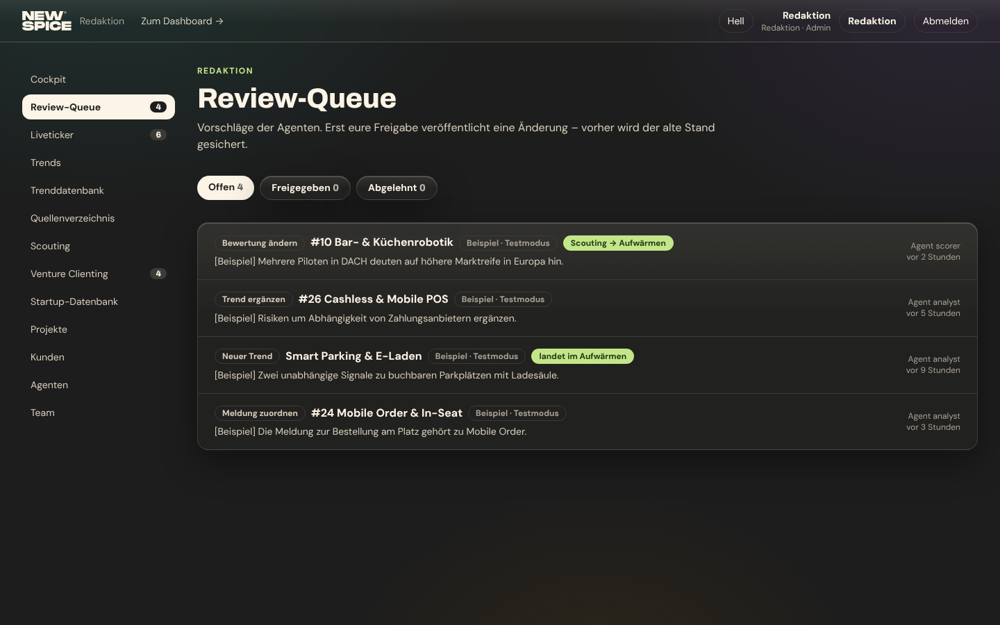
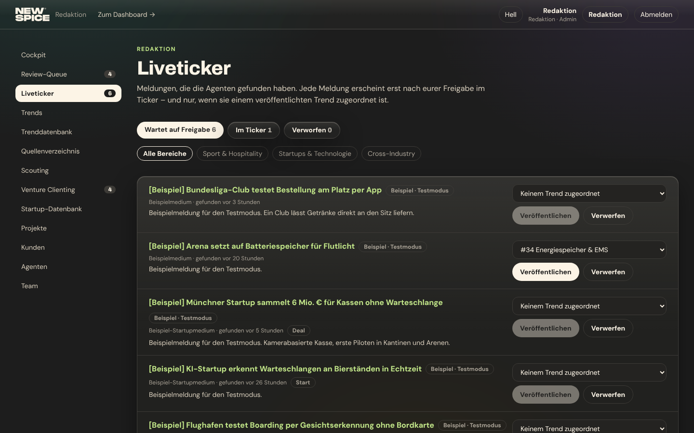

<meta charset="utf-8">
<title>Redaktion Cockpit · Entwurf 14</title>
<meta name="claude:viewport-fit-sides" content="cover">
<link rel="preconnect" href="https://fonts.googleapis.com">
<link rel="preconnect" href="https://fonts.gstatic.com" crossorigin>
<link rel="stylesheet" href="https://fonts.googleapis.com/css2?family=Archivo:wght@800&family=DM+Sans:opsz,wght@9..40,400;9..40,700&display=swap">
<style>

/* Layout: Entwurfsmappe – oben Reiter (Heute · A · B · C), je Reiter eine skalierte 1440er-Bühne bzw. 390er-Handy,
   darunter die Notizen. Tokens 1:1 aus app/globals.css (Dunkel Standard, Hell per data-theme="light"). */
:root {
  --bg: #1d1d1d; --surface: #2b2a27; --sunk: #242321; --line: #3d3b37;
  --ink: #fcf4e6; --text: #d9cfbd; --muted: #a8a195;
  --accent: #c2e689; --on-accent: #253912; --accent-ink: #c2e689; --logo: #f3efe6;
  --glass-tint: rgba(43, 42, 39, 0.38); --glass-tint-strong: rgba(36, 35, 33, 0.62);
  --glass-edge: rgba(252, 244, 230, 0.14); --glass-hi: rgba(252, 244, 230, 0.24);
  --glass-sheen: rgba(252, 244, 230, 0.08); --glass-shadow: 0 18px 50px rgba(0, 0, 0, 0.4);
  --cA: #c2402a; --cB: #4d9cd0; --cC: #9d6500; --cD: #2ca8a0; --cE: #7b57b9; --cF: #66a758; --cG: #ca6db8;
  --cA-fg: #fcf4e6; --cB-fg: #1d1d1d; --cC-fg: #fcf4e6; --cD-fg: #1d1d1d; --cE-fg: #fcf4e6; --cF-fg: #1d1d1d; --cG-fg: #1d1d1d;
  --font-display: "Archivo", "Arial Narrow", "Helvetica Neue", Arial, sans-serif;
  --font-sans: "DM Sans", "Segoe UI", system-ui, sans-serif;
  --radius-card: 16px; --radius-pill: 40px;
  color-scheme: dark;
}
@media (prefers-color-scheme: light) { :root:not([data-theme="dark"]) {
  --bg: #fcf4e6; --surface: #faf8f4; --sunk: #f2e5cf; --line: #e3d7c2;
  --ink: #1d1d1d; --text: #3d3b37; --muted: #655f55; --accent-ink: #4a6b1a; --logo: #1d1d1d;
  --glass-tint: rgba(252, 248, 240, 0.42); --glass-tint-strong: rgba(252, 248, 240, 0.72);
  --glass-edge: rgba(255, 255, 255, 0.75); --glass-hi: rgba(255, 255, 255, 0.95);
  --glass-sheen: rgba(255, 255, 255, 0.4); --glass-shadow: 0 18px 50px rgba(29, 29, 29, 0.14);
  --cA: #b6341f; --cB: #3e8cc9; --cC: #8f5d04; --cD: #009b92; --cE: #6a45a6; --cF: #549a44; --cG: #c562b2;
  color-scheme: light;
} }
:root[data-theme="light"] {
  --bg: #fcf4e6; --surface: #faf8f4; --sunk: #f2e5cf; --line: #e3d7c2;
  --ink: #1d1d1d; --text: #3d3b37; --muted: #655f55; --accent-ink: #4a6b1a; --logo: #1d1d1d;
  --glass-tint: rgba(252, 248, 240, 0.42); --glass-tint-strong: rgba(252, 248, 240, 0.72);
  --glass-edge: rgba(255, 255, 255, 0.75); --glass-hi: rgba(255, 255, 255, 0.95);
  --glass-sheen: rgba(255, 255, 255, 0.4); --glass-shadow: 0 18px 50px rgba(29, 29, 29, 0.14);
  --cA: #b6341f; --cB: #3e8cc9; --cC: #8f5d04; --cD: #009b92; --cE: #6a45a6; --cF: #549a44; --cG: #c562b2;
  color-scheme: light;
}

* { box-sizing: border-box; }
body { background: var(--bg); color: var(--text); font-family: var(--font-sans); font-size: 16px; line-height: 1.55; }
h1, h2, h3 { font-family: var(--font-display); font-weight: 800; color: var(--ink); letter-spacing: -0.014em; line-height: 1.1; text-wrap: balance; margin: 0; }
p { margin: 0; }
button { font: inherit; color: inherit; background: none; border: 0; cursor: pointer; padding: 0; }
:focus-visible { outline: 2px solid var(--accent); outline-offset: 2px; }
.eyebrow { font-weight: 700; font-size: 12px; letter-spacing: .125em; text-transform: uppercase; color: var(--accent-ink); }
.num { font-family: var(--font-display); font-weight: 800; font-variant-numeric: tabular-nums; }
.glass { background: linear-gradient(180deg, var(--glass-sheen), transparent 55%), var(--glass-tint);
  -webkit-backdrop-filter: blur(22px) saturate(170%); backdrop-filter: blur(22px) saturate(170%);
  border: 1px solid var(--glass-edge); box-shadow: inset 0 1px 0 var(--glass-hi), var(--glass-shadow); }
.glass-strong { background: linear-gradient(180deg, var(--glass-sheen), transparent 45%), var(--glass-tint-strong);
  -webkit-backdrop-filter: blur(28px) saturate(180%); backdrop-filter: blur(28px) saturate(180%);
  border: 1px solid var(--glass-edge); box-shadow: inset 0 1px 0 var(--glass-hi), var(--glass-shadow); }

/* ───── Mappe ───── */
.top { position: sticky; top: env(safe-area-inset-top, 0px); z-index: 20; border-bottom: 1px solid var(--line);
  background: var(--bg); padding-left: max(16px, env(safe-area-inset-left, 0px)); padding-right: max(16px, env(safe-area-inset-right, 0px)); }
body::before { content: ""; position: fixed; inset: 0 0 auto; height: env(safe-area-inset-top, 0px); z-index: 30; background: var(--bg); }
.top-in { max-width: 1440px; margin: 0 auto; display: flex; flex-wrap: wrap; align-items: center; gap: 12px 24px; padding-block: 12px; }
.brand { display: flex; align-items: center; gap: 12px; color: var(--logo); }
.brand svg { height: 22px; width: auto; }
.brand span { font-size: 13px; color: var(--muted); }
.tabs { display: flex; flex-wrap: wrap; gap: 4px; flex: 1; }
.tab { border-radius: var(--radius-pill); padding: 6px 14px; font-size: 14px; font-weight: 700; color: var(--ink); }
.tab:hover { background: var(--sunk); }
.tab[aria-current="page"] { background: var(--ink); color: var(--bg); }
.tools { display: flex; gap: 8px; flex-wrap: wrap; }
.seg { display: inline-flex; border-radius: var(--radius-pill); padding: 2px; border: 1px solid var(--line); }
.seg button { border-radius: var(--radius-pill); padding: 4px 12px; font-size: 13px; font-weight: 700; color: var(--ink); }
.seg button[aria-pressed="true"] { background: var(--ink); color: var(--bg); }

main { max-width: 1440px; margin: 0 auto; padding-left: max(16px, env(safe-area-inset-left, 0px)); padding-right: max(16px, env(safe-area-inset-right, 0px)); padding-block: 32px 64px; display: flex; flex-direction: column; gap: 32px; }
.intro { display: grid; grid-template-columns: minmax(0, 1fr) auto; gap: 16px 32px; align-items: end; }
.intro h1 { font-size: clamp(28px, 3.4vw, 44px); }
.intro p.lead { max-width: 68ch; margin-top: 8px; }
.state { display: flex; gap: 8px; flex-wrap: wrap; align-items: center; font-size: 13px; color: var(--muted); }
@media (max-width: 760px) { .intro { grid-template-columns: 1fr; } }

/* Bühne: 1440×900 (Desktop) bzw. 390×844 (Handy), skaliert auf die verfügbare Breite */
.stage { position: relative; width: 100%; max-width: 100%; border-radius: var(--radius-card); overflow: hidden; border: 1px solid var(--line); background: var(--bg); }
.stage.desk { aspect-ratio: 1440 / 900; }
.stage.phone { aspect-ratio: 390 / 844; width: min(100%, 390px); margin: 0 auto; border-radius: 32px; }
.canvas { position: absolute; left: 0; top: 0; transform-origin: 0 0; transform: scale(var(--s, 1)); overflow: hidden; background: var(--bg); }
.desk .canvas { width: 1440px; height: 900px; }
.phone .canvas { width: 390px; height: 844px; }
.pair { display: grid; grid-template-columns: minmax(0, 1fr) 300px; gap: 24px; align-items: start; }
@media (max-width: 1000px) { .pair { grid-template-columns: 1fr; } }
.shot { width: 100%; display: block; border-radius: var(--radius-card); border: 1px solid var(--line); }

.notes { display: grid; grid-template-columns: repeat(auto-fit, minmax(240px, 1fr)); gap: 24px; }
.note { display: flex; flex-direction: column; gap: 8px; min-width: 0; }
.note h3 { font-size: 20px; }
.note ul { margin: 0; padding-left: 18px; display: flex; flex-direction: column; gap: 6px; }
.note .eyebrow { color: var(--muted); }
.facts { display: flex; flex-wrap: wrap; gap: 8px; }
.fact { border: 1px solid var(--line); border-radius: var(--radius-pill); padding: 4px 12px; font-size: 13px; color: var(--text); }
.fact b { color: var(--ink); }
.cmp { overflow-x: auto; }
.cmp table { border-collapse: collapse; width: 100%; min-width: 640px; font-size: 14px; }
.cmp th, .cmp td { text-align: left; padding: 10px 12px; border-bottom: 1px solid var(--line); vertical-align: top; }
.cmp th { color: var(--muted); font-weight: 700; font-size: 12px; letter-spacing: .1em; text-transform: uppercase; }
.cmp td:first-child { color: var(--ink); font-weight: 700; }
.reco { border: 1px solid var(--line); border-radius: var(--radius-card); padding: 24px; display: flex; flex-direction: column; gap: 8px; background: var(--surface); }
.reco p { max-width: 75ch; }


/* ───── Bühne: nachgebautes Backend ───── */
.canvas { color: var(--text); font-size: 14px; line-height: 1.45; }
.b-head { position: absolute; inset: 0 0 auto; height: 60px; display: flex; align-items: center; gap: 24px; padding: 0 32px; border-bottom: 1px solid var(--line); background: var(--bg); z-index: 3; }
.b-head .logo { color: var(--logo); display: flex; align-items: center; gap: 12px; }
.b-head .logo svg { height: 26px; width: auto; }
.b-head .logo span { color: var(--muted); font-size: 14px; }
.b-user { margin-left: auto; display: flex; align-items: center; gap: 16px; font-size: 13px; color: var(--muted); }
.b-user b { color: var(--ink); }
.side { position: absolute; left: 0; top: 60px; bottom: 0; width: 240px; padding: 24px 16px; display: flex; flex-direction: column; gap: 18px; border-right: 1px solid var(--line); overflow: hidden; }
.grp { display: flex; flex-direction: column; gap: 2px; }
.grp > .gh { font-weight: 700; font-size: 10px; letter-spacing: .125em; text-transform: uppercase; color: var(--muted); padding: 0 12px 4px; }
.it { display: flex; align-items: center; justify-content: space-between; gap: 8px; border-radius: 12px; padding: 6px 12px; color: var(--text); }
.it.on { background: var(--ink); color: var(--bg); font-weight: 700; }
.cnt { font-family: var(--font-display); font-weight: 800; font-size: 11px; border-radius: 999px; padding: 0 7px; background: var(--line); color: var(--ink); font-variant-numeric: tabular-nums; }
.it.on .cnt { background: var(--bg); color: var(--ink); }
.content { position: absolute; top: 60px; right: 0; bottom: 0; overflow: hidden; padding: 28px 32px; display: flex; flex-direction: column; gap: 24px; }
.card { background: var(--surface); border: 1px solid var(--line); border-radius: 16px; padding: 20px; min-width: 0; }
.h1 { font-family: var(--font-display); font-weight: 800; color: var(--ink); font-size: 40px; line-height: 1.05; letter-spacing: -.014em; }
.h2 { font-family: var(--font-display); font-weight: 800; color: var(--ink); font-size: 22px; line-height: 1.1; }
.h3 { font-family: var(--font-display); font-weight: 800; color: var(--ink); font-size: 17px; line-height: 1.15; }
.small { font-size: 12px; color: var(--muted); }
.small b { color: var(--ink); }
.bdg { display: inline-flex; align-items: center; border: 1px solid var(--line); border-radius: 40px; padding: 0 8px; font-size: 11px; font-weight: 700; color: var(--ink); white-space: nowrap; }
.bdg.muted { color: var(--muted); }
.ex { font-size: 10px; font-weight: 700; color: var(--muted); border: 1px dashed var(--line); border-radius: 40px; padding: 0 7px; white-space: nowrap; }
.rel { letter-spacing: .15em; color: var(--ink); font-size: 11px; }
.rel s { text-decoration: none; color: var(--line); }
.lnk { color: var(--accent-ink); font-size: 13px; font-weight: 700; white-space: nowrap; }
.btn { display: inline-flex; align-items: center; gap: 6px; border-radius: 40px; padding: 4px 12px; font-size: 12px; font-weight: 700; border: 1px solid var(--line); color: var(--ink); white-space: nowrap; }
.btn.solid { background: var(--ink); color: var(--bg); border-color: var(--ink); }
.warn { display: flex; gap: 8px; align-items: flex-start; font-size: 12px; color: var(--text); border: 1px solid var(--line); border-radius: 12px; padding: 10px 12px; background: var(--sunk); }
.warn::before { content: "!"; flex: none; display: grid; place-items: center; width: 18px; height: 18px; border-radius: 50%; background: var(--ink); color: var(--bg); font-weight: 800; font-size: 11px; }
.lime { background: var(--accent); color: var(--on-accent); border-radius: 16px; }
.lime .eyebrow, .lime .h1, .lime .h2, .lime .h3, .lime b, .lime .small { color: var(--on-accent); }
.row { display: flex; align-items: center; gap: 12px; }
.trunc { white-space: nowrap; overflow: hidden; text-overflow: ellipsis; min-width: 0; }
.tbl { width: 100%; border-collapse: collapse; font-size: 13px; }
.tbl th { text-align: left; font-size: 10px; letter-spacing: .125em; text-transform: uppercase; color: var(--muted); font-weight: 700; padding: 8px 10px; border-bottom: 1px solid var(--line); }
.tbl td { padding: 9px 10px; border-bottom: 1px solid var(--line); vertical-align: middle; }
.tbl tr.hi td { background: var(--sunk); }
.ico { width: 16px; height: 16px; flex: none; }
.tabsb { display: flex; gap: 4px; }
.tabsb span { padding: 6px 14px; border-radius: 40px; font-weight: 700; color: var(--ink); white-space: nowrap; }
.tabsb span.on { background: var(--ink); color: var(--bg); }
.chip { display: inline-flex; align-items: center; gap: 6px; border: 1px solid var(--line); border-radius: 40px; padding: 1px 10px 1px 3px; font-size: 12px; font-weight: 700; color: var(--ink); white-space: nowrap; background: none; }
.chip i { font-style: normal; display: inline-grid; place-items: center; width: 18px; height: 18px; border-radius: 50%; font-size: 10px; font-weight: 800; font-family: var(--font-display); }
.badge-new { position: relative; display: inline-flex; align-items: center; gap: 6px; border-radius: 40px; background: var(--ink); color: var(--bg); padding: 2px 10px; font-size: 11px; font-weight: 700; text-transform: uppercase; white-space: nowrap; }
.badge-new::before { content: ""; width: 6px; height: 6px; border-radius: 50%; background: var(--bg); }
.ping::after { content: ""; position: absolute; inset: 0; border-radius: inherit; border: 2px solid var(--ink); animation: ping 1.8s ease-out infinite; }
@keyframes ping { from { transform: scale(1); opacity: .9; } to { transform: scale(1.6); opacity: 0; } }
@media (prefers-reduced-motion: reduce) { .ping::after { animation: none; } }
.blink-r::after, .blink-y::after { content: ""; position: absolute; inset: -4px; border-radius: 50%; pointer-events: none; }
.blink-r::after { border-radius: 9px; border: 2px solid var(--cA); animation: blink 1.1s ease-in-out infinite; }
.blink-y::after { border: 2px solid var(--cC); animation: blink 2.2s ease-in-out infinite; }
@keyframes blink { 0%, 100% { opacity: 0; transform: scale(.85); } 50% { opacity: 1; transform: scale(1.1); } }
.toast-in { animation: tin .35s ease-out; }
@keyframes tin { from { transform: translateY(16px); opacity: 0; } to { transform: none; opacity: 1; } }
@media (prefers-reduced-motion: reduce) { .blink-r::after, .blink-y::after { animation: none; opacity: 1; } .toast-in { animation: none; } }
.drop { position: absolute; z-index: 5; background: var(--surface); border: 1px solid var(--line); border-radius: 16px; box-shadow: var(--glass-shadow); padding: 8px; width: 260px; display: flex; flex-direction: column; gap: 2px; }
</style>

<header class="top">
  <div class="top-in">
    <div class="brand"><svg role="img" aria-label="New Spice" viewBox="0 0 535 212" fill="none" xmlns="http://www.w3.org/2000/svg"><path d="M534.427 139.758H466.278V148.893H534.427V172.803H466.278V181.938H534.427V210.063H429.357V111.633H534.427V139.758Z" fill="currentColor"/><path d="M299.594 160.713C299.594 126.543 318.164 110.223 361.469 110.223C400.843 110.223 421.378 124.008 422.923 155.088H385.513C384.103 145.803 376.934 141.168 361.469 141.168C339.809 141.168 336.148 150.303 336.148 160.713C336.148 171.123 339.944 180.543 361.469 180.543C376.934 180.543 384.103 175.758 385.513 166.338H422.923C421.378 197.553 400.993 211.473 361.469 211.473C318.149 211.473 299.594 195.018 299.594 160.713Z" fill="currentColor"/><path d="M292.498 111.633V210.063H255.928V111.633H292.498Z" fill="currentColor"/><path d="M211.793 111.633C234.158 111.633 249.473 127.383 249.473 149.313C249.473 171.243 234.143 186.993 211.793 186.993H171.008V210.063H134.438V111.633H211.778H211.793ZM204.758 156.063C208.418 156.063 212.918 156.063 212.918 149.313C212.918 142.563 208.418 142.563 204.758 142.563H171.008V156.063H204.758Z" fill="currentColor"/><path d="M0.25 175.338H37.3982C37.3982 180.123 41.9712 183.348 65.5527 183.348C87.5642 183.348 90.8415 181.938 90.8415 178.278C90.8415 174.063 87.5489 173.493 64.1198 172.788C18.9689 171.378 1.66764 164.073 1.66764 141.153C1.66764 119.493 23.2523 110.223 62.6869 110.223C102.122 110.223 123.706 119.508 123.706 144.678H86.5581C86.5581 139.473 77.9913 138.348 59.8364 138.348C41.6815 138.348 38.831 139.188 38.831 142.983C38.831 146.778 42.398 146.643 64.1198 147.483C103.57 149.028 128.005 151.698 128.005 177.438C128.005 204.573 105.14 211.473 64.1198 211.473C23.0999 211.473 0.25 204.588 0.25 175.338Z" fill="currentColor"/><path d="M409.445 0.632812H448.685L416.345 99.0629H362.06L345.89 42.3928L329.72 99.0629H275.435L243.095 0.632812H282.335L302.72 70.0978L324.095 0.632812H367.685L389.06 70.0978L409.445 0.632812Z" fill="currentColor"/><path d="M238.367 28.7578H170.867V37.8928H238.367V61.8028H170.867V70.9378H238.367V99.0629H134.297V0.632812H238.367V28.7578Z" fill="currentColor"/><path d="M91.4499 0.632812H128.005V99.0629H80.1999L37.7349 40.9828V99.0629H1.17993V0.632812H48.9849L91.4499 58.7128V0.632812Z" fill="currentColor"/><path d="M475.236 20.073H472.011L468.366 15.048H466.521V20.073H463.851V6.33301H469.341C472.461 6.33301 474.381 7.99801 474.381 10.773C474.381 12.798 473.151 14.268 471.201 14.808L475.221 20.073H475.236ZM469.206 8.71801H466.521V12.813H469.206C470.691 12.813 471.576 12.123 471.576 10.773C471.576 9.42301 470.676 8.71801 469.206 8.71801Z" fill="currentColor"/><path fill-rule="evenodd" clip-rule="evenodd" d="M468.561 25.6828C474.966 25.6828 480.156 20.4928 480.156 14.0878C480.156 7.68284 474.966 2.49283 468.561 2.49283C462.156 2.49283 456.966 7.68284 456.966 14.0878C456.966 20.4928 462.156 25.6828 468.561 25.6828ZM468.561 27.6478C476.046 27.6478 482.121 21.5728 482.121 14.0878C482.121 6.60284 476.046 0.527832 468.561 0.527832C461.076 0.527832 455.001 6.60284 455.001 14.0878C455.001 21.5728 461.076 27.6478 468.561 27.6478Z" fill="currentColor"/></svg><span>Entwurf 14 · Redaktion: Cockpit und Navigation · Runde 1, grob</span></div>
    <nav class="tabs" aria-label="Ansicht der Mappe">
      <a class="tab" href="#heute" data-v="heute">Heute</a>
      <a class="tab" href="#a" data-v="a">A · Ruhig</a>
      <a class="tab" href="#b" data-v="b">B · Arbeitsliste</a>
      <a class="tab" href="#c" data-v="c">C · Newsroom</a>
      <a class="tab" href="#vergleich" data-v="vergleich">Vergleich</a>
      <a class="tab" href="#vorschlag" data-v="vorschlag">Vorschlag · Runde 2</a>
      <a class="tab" href="#runde3" data-v="runde3">Runde 3 · Feed &amp; Funnel</a>
      <a class="tab" href="#runde4" data-v="runde4">Runde 4 · Ampel</a>
      <a class="tab" href="#runde5" data-v="runde5">Runde 5 · Anfragen &amp; Projekte</a>
      <a class="tab" href="#runde6" data-v="runde6">Runde 6 · Bewerbungen</a>
    </nav>
    <div class="tools">
      <div class="seg" role="group" aria-label="Gerät">
        <button type="button" id="dev-desk" data-dev="desk" aria-pressed="true">Desktop 1440</button>
        <button type="button" id="dev-phone" data-dev="phone" aria-pressed="false">Handy 390</button>
      </div>
      <div class="seg" role="group" aria-label="Darstellung">
        <button type="button" id="th-dark" data-th="dark">Dunkel</button>
        <button type="button" id="th-light" data-th="light">Hell</button>
      </div>
    </div>
  </div>
</header>

<main id="main"></main>

<script>
const LOGO = `<svg role="img" aria-label="New Spice" viewBox="0 0 535 212" fill="none" xmlns="http://www.w3.org/2000/svg"><path d="M534.427 139.758H466.278V148.893H534.427V172.803H466.278V181.938H534.427V210.063H429.357V111.633H534.427V139.758Z" fill="currentColor"/><path d="M299.594 160.713C299.594 126.543 318.164 110.223 361.469 110.223C400.843 110.223 421.378 124.008 422.923 155.088H385.513C384.103 145.803 376.934 141.168 361.469 141.168C339.809 141.168 336.148 150.303 336.148 160.713C336.148 171.123 339.944 180.543 361.469 180.543C376.934 180.543 384.103 175.758 385.513 166.338H422.923C421.378 197.553 400.993 211.473 361.469 211.473C318.149 211.473 299.594 195.018 299.594 160.713Z" fill="currentColor"/><path d="M292.498 111.633V210.063H255.928V111.633H292.498Z" fill="currentColor"/><path d="M211.793 111.633C234.158 111.633 249.473 127.383 249.473 149.313C249.473 171.243 234.143 186.993 211.793 186.993H171.008V210.063H134.438V111.633H211.778H211.793ZM204.758 156.063C208.418 156.063 212.918 156.063 212.918 149.313C212.918 142.563 208.418 142.563 204.758 142.563H171.008V156.063H204.758Z" fill="currentColor"/><path d="M0.25 175.338H37.3982C37.3982 180.123 41.9712 183.348 65.5527 183.348C87.5642 183.348 90.8415 181.938 90.8415 178.278C90.8415 174.063 87.5489 173.493 64.1198 172.788C18.9689 171.378 1.66764 164.073 1.66764 141.153C1.66764 119.493 23.2523 110.223 62.6869 110.223C102.122 110.223 123.706 119.508 123.706 144.678H86.5581C86.5581 139.473 77.9913 138.348 59.8364 138.348C41.6815 138.348 38.831 139.188 38.831 142.983C38.831 146.778 42.398 146.643 64.1198 147.483C103.57 149.028 128.005 151.698 128.005 177.438C128.005 204.573 105.14 211.473 64.1198 211.473C23.0999 211.473 0.25 204.588 0.25 175.338Z" fill="currentColor"/><path d="M409.445 0.632812H448.685L416.345 99.0629H362.06L345.89 42.3928L329.72 99.0629H275.435L243.095 0.632812H282.335L302.72 70.0978L324.095 0.632812H367.685L389.06 70.0978L409.445 0.632812Z" fill="currentColor"/><path d="M238.367 28.7578H170.867V37.8928H238.367V61.8028H170.867V70.9378H238.367V99.0629H134.297V0.632812H238.367V28.7578Z" fill="currentColor"/><path d="M91.4499 0.632812H128.005V99.0629H80.1999L37.7349 40.9828V99.0629H1.17993V0.632812H48.9849L91.4499 58.7128V0.632812Z" fill="currentColor"/><path d="M475.236 20.073H472.011L468.366 15.048H466.521V20.073H463.851V6.33301H469.341C472.461 6.33301 474.381 7.99801 474.381 10.773C474.381 12.798 473.151 14.268 471.201 14.808L475.221 20.073H475.236ZM469.206 8.71801H466.521V12.813H469.206C470.691 12.813 471.576 12.123 471.576 10.773C471.576 9.42301 470.676 8.71801 469.206 8.71801Z" fill="currentColor"/><path fill-rule="evenodd" clip-rule="evenodd" d="M468.561 25.6828C474.966 25.6828 480.156 20.4928 480.156 14.0878C480.156 7.68284 474.966 2.49283 468.561 2.49283C462.156 2.49283 456.966 7.68284 456.966 14.0878C456.966 20.4928 462.156 25.6828 468.561 25.6828ZM468.561 27.6478C476.046 27.6478 482.121 21.5728 482.121 14.0878C482.121 6.60284 476.046 0.527832 468.561 0.527832C461.076 0.527832 455.001 6.60284 455.001 14.0878C455.001 21.5728 461.076 27.6478 468.561 27.6478Z" fill="currentColor"/></svg>`;
/* Beispielinhalte wie im Testmodus (lib/admin/fixture-repo.ts) */
const P = [
  { kind: "Bewertung ändern", what: "#10 Bar- & Küchenrobotik", why: "Mehrere Piloten in DACH deuten auf höhere Marktreife in Europa hin.", agent: "Scorer", age: "vor 2 Std." },
  { kind: "Meldung zuordnen", what: "#24 Mobile Order & In-Seat", why: "Die Meldung zur Bestellung am Platz gehört zu Mobile Order.", agent: "Analyst", age: "vor 3 Std." },
  { kind: "Trend ergänzen", what: "#26 Cashless & Mobile POS", why: "Risiken um Abhängigkeit von Zahlungsanbietern ergänzen.", agent: "Analyst", age: "vor 5 Std." },
  { kind: "Neuer Trend", what: "Smart Parking & E-Laden", why: "Zwei unabhängige Signale zu buchbaren Parkplätzen mit Ladesäule.", agent: "Analyst", age: "vor 9 Std." },
];
const L = [
  { key: "Sport & Hospitality", blurb: "Clubs, Ligen, Arenen, Hotels und Events", scouts: "0 von 7 Scouts im Einsatz", fresh: 3, items: [
    { t: "Bundesliga-Club testet Bestellung am Platz per App", src: "Beispielmedium", age: "vor 3 Std.", rel: 3, st: "neu" },
    { t: "Arena setzt auf Batteriespeicher für Flutlicht", src: "Beispielmedium", age: "vor 20 Std.", rel: 2, st: "#34" },
    { t: "Neue Studie zu Fan-Anreise mit ÖPNV", src: "Beispielverband", age: "vorgestern", rel: 2, st: "Im Ticker" } ] },
  { key: "Startups & Technologie", blurb: "Startups, Finanzierungen, Technologien", scouts: "0 von 1 Scout im Einsatz", fresh: 2, items: [
    { t: "Münchner Startup sammelt 6 Mio. € für Kassen ohne Warteschlange", src: "Beispiel-Startupmedium", age: "vor 5 Std.", rel: 3, st: "neu" },
    { t: "KI-Startup erkennt Warteschlangen an Bierständen in Echtzeit", src: "Beispiel-Startupmedium", age: "vor 26 Std.", rel: 2, st: "neu" } ] },
  { key: "Cross-Industry", blurb: "Flughäfen, Bahnhöfe, Handel, Messen", scouts: "0 von 1 Scout im Einsatz", fresh: 2, items: [
    { t: "Flughafen testet Boarding per Gesichtserkennung ohne Bordkarte", src: "Beispiel-Reisemedium", age: "vor 8 Std.", rel: 3, st: "neu" },
    { t: "Bahnhof steuert Personenströme mit Echtzeit-Anzeigen", src: "Beispiel-Bahnmedium", age: "vorgestern", rel: 2, st: "neu" } ] },
];
const rel = (n) => `<span class="rel" aria-label="Relevanz ${n} von 3">${"●".repeat(n)}<s>${"●".repeat(3 - n)}</s></span>`;
const st = (s) => s === "neu" ? `<span class="bdg muted">neu</span>` : s === "Im Ticker" ? `<span class="bdg">Im Ticker</span>` : `<span class="bdg muted">${s}</span>`;
const ic = {
  chev: `<svg class="ico" viewBox="0 0 16 16" fill="none" stroke="currentColor" stroke-width="1.8"><path d="M4 6l4 4 4-4"/></svg>`,
  search: `<svg class="ico" viewBox="0 0 16 16" fill="none" stroke="currentColor" stroke-width="1.8"><circle cx="7" cy="7" r="4.5"/><path d="M10.5 10.5L14 14"/></svg>`,
  menu: `<svg class="ico" viewBox="0 0 16 16" fill="none" stroke="currentColor" stroke-width="1.8"><path d="M2 4h12M2 8h12M2 12h12"/></svg>`,
  ok: `<svg class="ico" viewBox="0 0 16 16" fill="none" stroke="currentColor" stroke-width="2"><path d="M3 8.5l3 3 7-7"/></svg>`,
  x: `<svg class="ico" viewBox="0 0 16 16" fill="none" stroke="currentColor" stroke-width="2"><path d="M4 4l8 8M12 4l-8 8"/></svg>`,
};
const state = { view: "heute", dev: "desk", drop: false, menu: false, hov: "0-0" };

/* Navigation gruppiert (Vorschlag aus dem Briefing, leicht umgestellt) */
const NAV = [
  { g: null, items: [["Cockpit", 0, true]] },
  { g: "Inhalte", items: [["Review-Queue", 4], ["Liveticker", 6], ["Trends", 0], ["Trenddatenbank", 0], ["Quellenverzeichnis", 0]] },
  { g: "Agenten", items: [["Scouting", 0], ["Agenten-Protokoll", 0]] },
  { g: "Venture Clienting", items: [["Challenges", 4], ["Startup-Datenbank", 0]] },
  { g: "Kunden", items: [["Projekte", 0], ["Kunden", 0], ["Team", 0]] },
];
const item = ([l, c, on]) => `<span class="it${on ? " on" : ""}"><span>${l}</span>${c ? `<span class="cnt">${c}</span>` : ""}</span>`;
function bhead(extra = "") {
  return `<div class="b-head"><span class="logo">${LOGO}<span>Redaktion</span></span>${extra}
    <span class="b-user"><span>Zum Dashboard →</span><span>Hell</span><span><b>Redaktion</b> · Admin</span><span>Abmelden</span></span></div>`;
}
function phead(title = "Redaktion") {
  return `<div class="b-head" style="height:56px;padding:0 16px;gap:10px"><span class="logo">${LOGO.replace("<svg", '<svg style="height:20px"')}<span style="font-size:13px">${title}</span></span>
    <span class="b-user" style="gap:8px">${toggleMenu()}</span></div>`;
}
const toggleMenu = () => `<button type="button" data-menu="1" class="btn">${ic.menu} Menü</button>`;
function phoneMenu() {
  if (!state.menu) return "";
  return `<div style="position:absolute;inset:56px 0 0;background:var(--bg);z-index:4;padding:16px;display:flex;flex-direction:column;gap:16px;overflow:hidden">
    ${NAV.map((g) => `<div class="grp">${g.g ? `<span class="gh">${g.g}</span>` : ""}${g.items.map(item).join("")}</div>`).join("")}
    <span class="small">Zum Dashboard → · Hell · Abmelden</span></div>`;
}

/* ───── A · Ruhig: gruppierte Seitenleiste, ein großer Limetten-Block mit den nächsten Freigaben ───── */
function A_desk() {
  return `${bhead()}
  <nav class="side">${NAV.map((g) => `<div class="grp">${g.g ? `<span class="gh">${g.g}</span>` : ""}${g.items.map(item).join("")}</div>`).join("")}
    <div class="warn" style="margin-top:auto">Keine Agentenläufe in den letzten 7 Tagen. <span class="lnk" style="font-size:12px">Scouting →</span></div></nav>
  <div class="content" style="left:240px">
    <div><p class="eyebrow" style="color:var(--muted)">Freitag, 6. November</p><h1 class="h1">Cockpit</h1></div>
    <div style="display:grid;grid-template-columns:minmax(0,1.35fr) minmax(0,1fr);gap:24px">
      <section class="lime" style="padding:24px;display:flex;flex-direction:column;gap:14px">
        <div class="row" style="justify-content:space-between"><span class="eyebrow">Wartet auf eure Freigabe</span><b style="font-size:13px">Review-Queue →</b></div>
        <div class="row" style="align-items:baseline;gap:12px"><span class="num" style="font-size:72px;line-height:.9">4</span><span class="h3">offene Vorschläge der Agenten</span></div>
        <ol style="list-style:none;margin:0;padding:0;display:flex;flex-direction:column">${P.slice(0, 3).map((p) => `
          <li style="display:grid;grid-template-columns:minmax(0,1fr) auto;gap:12px;padding:8px 0;border-top:1px solid rgba(37,57,18,.2)">
            <span class="trunc"><b>${p.what}</b> · ${p.kind}</span><span style="font-size:12px">${p.age}</span></li>`).join("")}</ol>
      </section>
      <section style="display:flex;flex-direction:column;gap:0">
        ${[["Meldungen ohne Freigabe", "6", "Liveticker →"], ["Trends veröffentlicht", "44", "0 Entwürfe"], ["Radar heute", "18 · 18 · 8", "Anstoß · Aufwärmen · Scouting"], ["Agentenläufe (7 Tage)", "0", "0 Tsd. Tokens"]].map(([l, v, s]) => `
          <div style="display:grid;grid-template-columns:minmax(0,1fr) auto;align-items:baseline;gap:12px;padding:12px 0;border-bottom:1px solid var(--line)">
            <span><span style="color:var(--ink);font-weight:700">${l}</span><br><span class="small">${s}</span></span><span class="num" style="font-size:30px;color:var(--ink)">${v}</span></div>`).join("")}
      </section>
    </div>
    <section style="display:flex;flex-direction:column;gap:12px">
      <div class="row" style="justify-content:space-between"><span class="h2">Lagebild</span><span class="small">Wichtigste Meldungen der letzten 14 Tage · <span class="lnk">Scouts steuern →</span></span></div>
      <div style="display:grid;grid-template-columns:repeat(3,minmax(0,1fr));gap:24px">${L.map((l) => `
        <div style="display:flex;flex-direction:column;gap:10px;border-top:2px solid var(--ink);padding-top:12px">
          <div class="row" style="justify-content:space-between"><span class="h3">${l.key}</span><span class="small"><b>${l.fresh}</b> neu</span></div>
          ${l.items.slice(0, 2).map((s) => `<div style="display:flex;flex-direction:column;gap:4px"><span style="font-weight:700;color:var(--ink)">${s.t} <span style="color:var(--muted)">↗</span></span><span class="row small" style="gap:8px">${rel(s.rel)}${s.src} · ${s.age} ${st(s.st)}</span></div>`).join("")}
          <span class="small">${l.items.length > 2 ? `+${l.items.length - 2} weitere · ` : ""}<span class="lnk" style="font-size:12px">Alle im Liveticker →</span></span></div>`).join("")}
      </div></section>
  </div>`;
}
function A_phone() {
  return `${phead()}${phoneMenu()}
  <div class="content" style="left:0;top:56px;padding:20px 16px;gap:16px">
    <div><p class="eyebrow" style="color:var(--muted);font-size:10px">Freitag, 6. November</p><h1 class="h1" style="font-size:30px">Cockpit</h1></div>
    <section class="lime" style="padding:18px;display:flex;flex-direction:column;gap:10px">
      <span class="eyebrow" style="font-size:10px">Wartet auf eure Freigabe</span>
      <div class="row" style="align-items:baseline"><span class="num" style="font-size:52px;line-height:.9">4</span><span class="h3" style="font-size:15px">offene Vorschläge</span></div>
      ${P.slice(0, 2).map((p) => `<div class="trunc" style="border-top:1px solid rgba(37,57,18,.2);padding-top:6px;font-size:13px"><b>${p.what}</b> · ${p.kind}</div>`).join("")}
      <b style="font-size:13px">Review-Queue öffnen →</b></section>
    <div style="display:grid;grid-template-columns:1fr 1fr;gap:8px">${[["Ohne Freigabe", "6"], ["Agentenläufe", "0"]].map(([l, v]) => `<div class="card" style="padding:12px"><span class="small">${l}</span><div class="num" style="font-size:26px;color:var(--ink)">${v}</div></div>`).join("")}</div>
    <div class="tabsb" style="font-size:12px"><span class="on">Sport & Hosp.</span><span>Startups</span><span>Cross-Ind.</span></div>
    ${L[0].items.slice(0, 2).map((s) => `<div style="display:flex;flex-direction:column;gap:4px;border-bottom:1px solid var(--line);padding-bottom:10px"><span style="font-weight:700;color:var(--ink)">${s.t}</span><span class="row small" style="gap:8px">${rel(s.rel)}${s.age} ${st(s.st)}</span></div>`).join("")}
  </div>`;
}

/* ───── B · Arbeitsliste: schmale Leiste mit Gruppen, Cockpit als „Heute zu tun“ mit Aktionen in der Zeile ───── */
const todo = [
  ...P.map((p) => ({ type: "Vorschlag", kind: p.kind, t: p.what, sub: p.why, area: p.agent, age: p.age, acts: "review" })),
  { type: "Meldung", kind: "Sport & Hosp.", t: "Bundesliga-Club testet Bestellung am Platz per App", sub: "Beispielmedium · " + rel(3), area: "#24 vorgeschlagen", age: "vor 3 Std.", acts: "signal" },
  { type: "Meldung", kind: "Startups", t: "Münchner Startup sammelt 6 Mio. € für Kassen ohne Warteschlange", sub: "Beispiel-Startupmedium · " + rel(3), area: "ohne Trend", age: "vor 5 Std.", acts: "signal" },
  { type: "Meldung", kind: "Cross-Industry", t: "Flughafen testet Boarding per Gesichtserkennung ohne Bordkarte", sub: "Beispiel-Reisemedium · " + rel(3), area: "ohne Trend", age: "vor 8 Std.", acts: "signal" },
  { type: "Meldung", kind: "Sport & Hosp.", t: "Arena setzt auf Batteriespeicher für Flutlicht", sub: "Beispielmedium · " + rel(2), area: "#34 zugeordnet", age: "vor 20 Std.", acts: "signal" },
];
function B_desk() {
  const side = `<nav class="side" style="width:212px;gap:14px;padding:20px 12px">
    <span class="row" style="gap:8px;border:1px solid var(--line);border-radius:40px;padding:5px 12px;color:var(--muted);font-size:13px">${ic.search} Springen zu …<span style="margin-left:auto;font-size:11px;border:1px solid var(--line);border-radius:6px;padding:0 5px">⌘K</span></span>
    ${NAV.map((g, i) => `<div class="grp">${g.g ? `<span class="gh row" style="justify-content:space-between">${g.g}<span style="font-size:12px">${i === 4 ? "›" : "⌄"}</span></span>` : ""}${i === 4 ? "" : g.items.map(item).join("")}</div>`).join("")}</nav>`;
  return `${bhead()}${side}
  <div class="content" style="left:212px;gap:18px;padding:24px 28px">
    <div class="row" style="justify-content:space-between;align-items:flex-end">
      <div><p class="eyebrow" style="color:var(--muted)">Redaktion · Fr, 6. November</p><h1 class="h1" style="font-size:34px">Heute zu tun</h1></div>
      <div class="row" style="gap:8px">
        <span class="lime row" style="border-radius:40px;padding:6px 14px;gap:8px"><span class="num" style="font-size:20px">4</span><b style="font-size:13px">Vorschläge</b></span>
        <span class="btn" style="padding:7px 14px"><span class="num" style="font-size:15px">6</span> Meldungen ohne Freigabe</span>
        <span class="btn" style="padding:7px 14px"><span class="num" style="font-size:15px">0</span> Läufe in 7 Tagen</span></div></div>
    <div style="display:grid;grid-template-columns:minmax(0,1fr) 280px;gap:24px;min-height:0">
      <section style="display:flex;flex-direction:column;gap:10px;min-width:0">
        <div class="row" style="justify-content:space-between"><div class="tabsb" style="font-size:13px"><span class="on">Alles · 8</span><span>Vorschläge · 4</span><span>Meldungen · 4</span></div><span class="small">Sortiert nach Dringlichkeit · <b>J/K</b> blättern, <b>F</b> freigeben</span></div>
        <table class="tbl"><thead><tr><th style="width:120px">Art</th><th>Worum es geht</th><th style="width:130px">Trend / Agent</th><th style="width:80px">Alter</th><th style="width:196px"></th></tr></thead><tbody>
        ${todo.map((r, i) => `<tr${i === 0 ? ' class="hi"' : ""}><td><span class="bdg${r.type === "Meldung" ? " muted" : ""}">${r.kind}</span></td>
          <td style="max-width:0"><div class="trunc" style="font-weight:700;color:var(--ink)">${r.t}</div><div class="trunc small">${r.sub}</div></td>
          <td class="small">${r.area}</td><td class="small">${r.age}</td>
          <td style="text-align:right;white-space:nowrap">${r.acts === "review" ? `<span class="btn solid">${ic.ok} Freigeben</span> <span class="btn">Prüfen</span>` : `<span class="btn">In Ticker</span> <span class="btn" title="Verwerfen">${ic.x}</span>`}</td></tr>`).join("")}
        </tbody></table>
        <span class="small">Ohne Freigabe älter als 14 Tage: <b>0</b> · <span class="lnk" style="font-size:12px">Erledigte heute anzeigen</span></span>
      </section>
      <aside style="display:flex;flex-direction:column;gap:14px">
        <div class="card" style="padding:16px"><span class="h3">Radar heute</span><div class="small">Veröffentlicht, Europa</div>
          <div style="display:grid;grid-template-columns:repeat(3,1fr);margin-top:10px">${[["Anstoß", 18], ["Aufwärmen", 18], ["Scouting", 8]].map(([l, v]) => `<div><div class="small">${l}</div><div class="num" style="font-size:26px;color:var(--ink)">${v}</div></div>`).join("")}</div></div>
        <div class="card" style="padding:16px;display:flex;flex-direction:column;gap:8px"><span class="h3">Scouts</span>
          ${L.map((l) => `<div class="row small" style="justify-content:space-between"><span style="color:var(--text)">${l.key}</span><span>${l.scouts.replace(" im Einsatz", "").replace(" Scouts", "").replace(" Scout", "")}</span></div>`).join("")}
          <div class="warn">Kein Scout im Einsatz.</div></div>
        <div class="card" style="padding:16px;display:flex;flex-direction:column;gap:6px"><span class="h3">Zuletzt im Ticker</span><span style="color:var(--ink);font-size:13px">Neue Studie zu Fan-Anreise mit ÖPNV</span><span class="small">#32 · vor 30 Std.</span></div>
      </aside></div>
  </div>`;
}
function B_phone() {
  return `${phead()}${phoneMenu()}
  <div class="content" style="left:0;top:56px;padding:18px 16px;gap:12px">
    <h1 class="h1" style="font-size:28px">Heute zu tun</h1>
    <div class="row" style="gap:6px;flex-wrap:wrap"><span class="lime row" style="border-radius:40px;padding:4px 12px;gap:6px"><span class="num" style="font-size:16px">4</span><b style="font-size:12px">Vorschläge</b></span><span class="btn">6 Meldungen</span><span class="btn">0 Läufe</span></div>
    ${todo.slice(0, 5).map((r) => `<div style="border-bottom:1px solid var(--line);padding-bottom:10px;display:flex;flex-direction:column;gap:5px">
      <span class="row small" style="justify-content:space-between"><span class="bdg${r.type === "Meldung" ? " muted" : ""}">${r.kind}</span>${r.age}</span>
      <span class="trunc" style="font-weight:700;color:var(--ink)">${r.t}</span>
      <span class="row" style="gap:6px">${r.acts === "review" ? `<span class="btn solid">Freigeben</span><span class="btn">Prüfen</span>` : `<span class="btn">In Ticker</span><span class="btn">Verwerfen</span>`}</span></div>`).join("")}
  </div>`;
}

/* ───── C · Newsroom: Navigation oben in Gruppen, Cockpit als Spaltenbrett ───── */
function C_desk() {
  const groups = `<span class="tabsb" style="margin-left:8px;font-size:14px"><span class="on">Cockpit</span>
    ${["Inhalte", "Agenten", "Venture Clienting", "Kunden"].map((g) => `<span ${g === "Inhalte" ? 'data-drop="1" role="button" tabindex="0"' : ""} style="display:inline-flex;align-items:center;gap:4px;cursor:pointer">${g}${g === "Inhalte" ? ' <span class="cnt">10</span>' : g === "Venture Clienting" ? ' <span class="cnt">4</span>' : ""} ${ic.chev}</span>`).join("")}</span>`;
  const drop = state.drop ? `<div class="drop" style="left:330px;top:54px">${NAV[1].items.map(item).join("")}</div>` : "";
  const col = (head, body, lime = false) => `<section style="display:flex;flex-direction:column;gap:10px;min-width:0;${lime ? "" : ""}">${head}${body}</section>`;
  const sig = (s) => `<div class="card" style="padding:12px 14px;display:flex;flex-direction:column;gap:6px">
      <span style="font-weight:700;color:var(--ink);line-height:1.3">${s.t}</span>
      <span class="row small" style="gap:8px;flex-wrap:wrap">${rel(s.rel)}${s.src} · ${s.age}</span>
      <span class="row" style="justify-content:space-between">${st(s.st)}<span class="row" style="gap:6px"><span class="btn">Trend ↗</span>${s.st === "Im Ticker" ? "" : '<span class="btn">In Ticker</span>'}</span></span></div>`;
  return `${bhead(groups)}${drop}
  <div class="content" style="left:0;padding:20px 32px;gap:16px">
    <div class="row" style="justify-content:space-between;align-items:flex-end">
      <div><p class="eyebrow" style="color:var(--muted)">Lagebild · letzte 14 Tage</p><h1 class="h1" style="font-size:34px">Newsroom</h1></div>
      <div class="row small" style="gap:20px"><span>Radar heute <b>18 · 18 · 8</b></span><span>Trends <b>44</b></span><span>Agentenläufe 7 Tage <b>0</b></span><span class="lnk">Scouts steuern →</span></div></div>
    <div style="display:grid;grid-template-columns:300px repeat(3,minmax(0,1fr));gap:20px">
      ${col(`<div class="lime" style="padding:16px;display:flex;flex-direction:column;gap:4px"><span class="eyebrow" style="font-size:10px">Zur Freigabe</span><div class="row" style="align-items:baseline;gap:8px"><span class="num" style="font-size:44px;line-height:.9">4</span><b>Vorschläge</b></div></div>`,
        P.map((p) => `<div class="card" style="padding:12px 14px;display:flex;flex-direction:column;gap:4px"><span class="row" style="justify-content:space-between"><span class="bdg">${p.kind}</span><span class="small">${p.age}</span></span><b style="color:var(--ink)">${p.what}</b><span class="small" style="line-height:1.35">${p.why}</span></div>`).join(""))}
      ${L.map((l) => col(`<div style="padding:4px 0 6px;border-bottom:2px solid var(--ink);display:flex;flex-direction:column;gap:2px">
          <div class="row" style="justify-content:space-between"><span class="h3">${l.key}</span><span class="small"><b>${l.fresh}</b> neu</span></div>
          <span class="small">${l.scouts}</span></div>`, l.items.map(sig).join(""))).join("")}
    </div>
  </div>`;
}
function C_phone() {
  return `<div class="b-head" style="height:56px;padding:0 16px"><span class="logo">${LOGO.replace("<svg", '<svg style="height:20px"')}<span style="font-size:13px">Redaktion</span></span><span class="b-user"><span class="btn">⋯</span></span></div>
  <div style="position:absolute;top:56px;left:0;right:0;border-bottom:1px solid var(--line);padding:8px 12px;overflow:hidden"><span class="tabsb" style="font-size:13px"><span class="on">Cockpit</span><span>Inhalte</span><span>Agenten</span><span>Venture</span><span>Kunden</span></span></div>
  <div class="content" style="left:0;top:106px;padding:16px;gap:12px">
    <div class="lime" style="padding:14px;display:flex;justify-content:space-between;align-items:center"><div class="row" style="align-items:baseline;gap:8px"><span class="num" style="font-size:36px;line-height:.9">4</span><b>zur Freigabe</b></div><b style="font-size:13px">Öffnen →</b></div>
    <div class="row small" style="justify-content:space-between"><span class="h3">Sport & Hospitality</span><span>1 / 3 · wischen →</span></div>
    <div style="display:flex;gap:12px;overflow:hidden"><div style="flex:0 0 320px;display:flex;flex-direction:column;gap:10px">${L[0].items.map((s) => `<div class="card" style="padding:12px;display:flex;flex-direction:column;gap:5px"><span style="font-weight:700;color:var(--ink);line-height:1.3">${s.t}</span><span class="row small" style="gap:8px">${rel(s.rel)}${s.age} ${st(s.st)}</span></div>`).join("")}</div>
      <div style="flex:0 0 320px" class="card"></div></div>
  </div>`;
}

/* ───── Vorschlag (Runde 2): Navigation aus A, Freigabe-Block aus A, Lagebild als Spalten aus C, Schnell-Aktionen nur für Meldungen ───── */
function R_card(s, li, si) {
  const on = state.hov === `${li}-${si}`;
  const acts = s.st === "Im Ticker"
    ? `<span class="btn">Aus dem Ticker nehmen</span>`
    : `${s.st === "neu" ? `<span class="btn">Trend zuordnen ${ic.chev}</span>` : ""}<span class="btn solid">In den Ticker</span><span class="btn" title="Verwerfen" aria-label="Verwerfen">${ic.x}</span>`;
  return `<div data-hov="${li}-${si}" class="card" style="padding:12px 14px;display:flex;flex-direction:column;gap:6px;${on ? "border-color:var(--ink);" : ""}">
    <span style="font-weight:700;color:var(--ink);line-height:1.3">${s.t} <span style="color:var(--muted)">↗</span></span>
    <span class="row small" style="gap:8px;flex-wrap:wrap">${rel(s.rel)}${s.src} · ${s.age}</span>
    <span class="row" style="justify-content:${on ? "flex-end" : "flex-start"};gap:6px;min-height:24px">${on ? acts : st(s.st)}</span></div>`;
}
function R_desk() {
  return `${bhead()}
  <nav class="side">${NAV.map((g) => `<div class="grp">${g.g ? `<span class="gh">${g.g}</span>` : ""}${g.items.map(item).join("")}</div>`).join("")}
    <div class="warn" style="margin-top:auto">Keine Agentenläufe in den letzten 7 Tagen. <span class="lnk" style="font-size:12px">Scouting →</span></div></nav>
  <div class="content" style="left:240px;gap:20px;padding:24px 32px">
    <div class="row" style="justify-content:space-between;align-items:flex-end"><div><p class="eyebrow" style="color:var(--muted)">Freitag, 6. November</p><h1 class="h1" style="font-size:34px">Cockpit</h1></div>
      <span class="small">Radar heute <b>18 · 18 · 8</b> · Trends <b>44</b> veröffentlicht</span></div>
    <div style="display:grid;grid-template-columns:minmax(0,1.6fr) minmax(0,1fr);gap:20px">
      <section class="lime" style="padding:18px 22px;display:grid;grid-template-columns:auto minmax(0,1fr);gap:4px 24px;align-items:start">
        <div style="display:flex;flex-direction:column;gap:2px"><span class="eyebrow" style="font-size:10px">Zur Freigabe</span><span class="num" style="font-size:64px;line-height:.95">4</span><b style="font-size:13px">Vorschläge</b></div>
        <ol style="list-style:none;margin:0;padding:0;display:flex;flex-direction:column">${P.slice(0, 3).map((p, i) => `
          <li style="display:grid;grid-template-columns:minmax(0,1fr) auto;gap:12px;padding:7px 0;${i ? "border-top:1px solid rgba(37,57,18,.2)" : ""}">
            <span class="trunc"><b>${p.what}</b> · ${p.kind}</span><span style="font-size:12px;white-space:nowrap">${p.age} · <b>Prüfen →</b></span></li>`).join("")}
          <li style="padding-top:6px;font-size:13px"><b>Alle in der Review-Queue →</b></li></ol>
      </section>
      <section style="display:flex;flex-direction:column">
        ${[["Meldungen ohne Freigabe", "6", "davon 4 mit hoher Relevanz", false], ["Agentenläufe (7 Tage)", "0", "Kein Scout im Einsatz · Scouting →", true]].map(([l, v, s, w]) => `
          <div style="display:grid;grid-template-columns:minmax(0,1fr) auto;align-items:center;gap:12px;padding:12px 0;border-bottom:1px solid var(--line)">
            <span><span style="color:var(--ink);font-weight:700">${l}</span><br><span class="small" ${w ? 'style="color:var(--ink)"' : ""}>${w ? "⚠ " : ""}${s}</span></span><span class="num" style="font-size:30px;color:var(--ink)">${v}</span></div>`).join("")}
      </section>
    </div>
    <section style="display:flex;flex-direction:column;gap:10px;min-height:0">
      <div class="row" style="justify-content:space-between"><span class="h2">Lagebild</span><span class="small">Letzte 14 Tage, nach Relevanz · <span class="lnk">Scouts steuern →</span></span></div>
      <div style="display:grid;grid-template-columns:repeat(3,minmax(0,1fr));gap:20px">${L.map((l, li) => `
        <div style="display:flex;flex-direction:column;gap:10px;min-width:0">
          <div style="padding-bottom:6px;border-bottom:2px solid var(--ink);display:flex;flex-direction:column;gap:2px">
            <div class="row" style="justify-content:space-between"><span class="h3">${l.key}</span><span class="small"><b>${l.fresh}</b> neu · <span class="lnk" style="font-size:12px">Alle →</span></span></div>
            <span class="small">${l.scouts}</span></div>
          ${l.items.map((s, si) => R_card(s, li, si)).join("")}</div>`).join("")}
      </div></section>
  </div>`;
}
function R_phone() {
  return `${phead()}${phoneMenu()}
  <div class="content" style="left:0;top:56px;padding:18px 16px;gap:14px">
    <h1 class="h1" style="font-size:28px">Cockpit</h1>
    <section class="lime" style="padding:16px;display:flex;flex-direction:column;gap:8px">
      <div class="row" style="justify-content:space-between;align-items:baseline"><span class="row" style="align-items:baseline;gap:8px"><span class="num" style="font-size:44px;line-height:.9">4</span><b>zur Freigabe</b></span><b style="font-size:13px">Öffnen →</b></div>
      ${P.slice(0, 2).map((p) => `<div class="trunc" style="border-top:1px solid rgba(37,57,18,.2);padding-top:6px;font-size:13px"><b>${p.what}</b> · ${p.kind}</div>`).join("")}</section>
    <div class="warn">Keine Agentenläufe in 7 Tagen · Scouting →</div>
    <div class="tabsb" style="font-size:12px"><span class="on">Sport & Hosp. · 3</span><span>Startups · 2</span><span>Cross · 2</span></div>
    ${L[0].items.slice(0, 2).map((s, si) => `<div class="card" style="padding:12px;display:flex;flex-direction:column;gap:6px"><span style="font-weight:700;color:var(--ink);line-height:1.3">${s.t}</span><span class="row small" style="gap:8px">${rel(s.rel)}${s.age}</span>
      <span class="row" style="gap:6px">${s.st === "Im Ticker" ? st(s.st) : `<span class="btn solid">In den Ticker</span><span class="btn">Verwerfen</span>`}</span></div>`).join("")}
  </div>`;
}

/* ───── Runde 3: Live-Feed rechts, Startup-Funnel im Limetten-Block, Projekte & Anfragen ───── */
const LANE_TAG = { S: "Sport & Hosp.", T: "Startups", X: "Cross-Industry" };
// Feed chronologisch, neueste oben. tr = automatisch vorgeschlagener Trend mit Treffsicherheit; alt = weitere Vorschläge
const FEED = [
  { id: "f1", lane: "T", time: "09:41", day: "Heute", t: "Münchner Startup sammelt 6 Mio. € für Kassen ohne Warteschlange", src: "Beispiel-Startupmedium", rel: 3,
    tr: [[19, "D", "Checkout-freie Gastronomie", 91], [26, "D", "Cashless & Mobile POS", 64], [24, "D", "Mobile Order & In-Seat", 41]] },
  { id: "f2", lane: "S", time: "09:12", day: "Heute", t: "Bundesliga-Club testet Bestellung am Platz per App", src: "Beispielmedium", rel: 3,
    tr: [[24, "D", "Mobile Order & In-Seat", 94], [4, "A", "Club-Superapps", 58], [26, "D", "Cashless & Mobile POS", 35]] },
  { id: "f3", lane: "X", time: "08:30", day: "Heute", t: "Flughafen testet Boarding per Gesichtserkennung ohne Bordkarte", src: "Beispiel-Reisemedium", rel: 3,
    tr: [[18, "D", "Biometrischer Zugang", 88], [27, "D", "Digitale Tickets & Anti-Fraud", 52]] },
  { id: "f4", lane: "X", time: "07:55", day: "Heute", t: "Freizeitpark führt dynamische Preise für die Fast-Lane ein", src: "Beispiel-Freizeitmedium", rel: 2,
    tr: [[12, "C", "Fair Dynamic Pricing", 47], [13, "C", "Premium-Hospitality-Tiers", 31]] },
  { id: "f5", lane: "X", time: "18:02", day: "Gestern", t: "Bahnhof steuert Personenströme mit Echtzeit-Anzeigen", src: "Beispiel-Bahnmedium", rel: 2,
    tr: [[37, "G", "KI-Crowd-Management", 76]] },
  { id: "f6", lane: "S", time: "13:10", day: "Gestern", t: "Arena setzt auf Batteriespeicher für Flutlicht", src: "Beispielmedium", rel: 2,
    tr: [[34, "F", "Energiespeicher & EMS", 97]] },
  { id: "f7", lane: "T", time: "07:15", day: "Gestern", t: "KI-Startup erkennt Warteschlangen an Bierständen in Echtzeit", src: "Beispiel-Startupmedium", rel: 2,
    tr: [[37, "G", "KI-Crowd-Management", 81], [11, "B", "KI-Gastroplanung", 70]] },
  { id: "f8", lane: "S", time: "16:05", day: "Mi, 4.11.", t: "Neue Studie zu Fan-Anreise mit ÖPNV", src: "Beispielverband", rel: 2,
    tr: [[32, "F", "Green Fan Mobility", 90]] },
];
Object.assign(state, { pushed: { f8: "Mi 16:20", f6: "08:15" }, pick: {}, dd: null, lane: "all", phTab: "overview" });
const trChip = (tr, open, id) => `<button type="button" data-dd="${id}" class="chip" style="cursor:pointer;${open ? "border-color:var(--ink)" : ""}"><i style="background:var(--c${tr[1]});color:var(--c${tr[1]}-fg)">${tr[1]}</i>#${tr[0]} ${tr[2]} ${ic.chev.replace('class="ico"', 'class="ico" style="width:12px;height:12px"')}</button>`;
function feedCard(f, compact = false) {
  const pushed = state.pushed[f.id];
  const sel = f.tr[state.pick[f.id] ?? 0];
  const unsure = sel[3] < 60 && state.pick[f.id] === undefined;
  const open = state.dd === f.id;
  const dd = open ? `<div style="border:1px solid var(--line);border-radius:12px;background:var(--surface);padding:6px;display:flex;flex-direction:column;gap:2px;box-shadow:var(--glass-shadow)">
      <span class="row small" style="gap:6px;border:1px solid var(--line);border-radius:40px;padding:3px 10px">${ic.search} Trend suchen (Name oder #)</span>
      ${f.tr.map((t, i) => `<button type="button" data-pick="${f.id}:${i}" class="row" style="justify-content:space-between;padding:5px 8px;border-radius:8px;text-align:left;${t === sel ? "background:var(--sunk)" : ""}"><span class="row" style="gap:6px;font-size:12px;color:var(--ink);font-weight:700"><i style="font-style:normal;display:inline-grid;place-items:center;width:18px;height:18px;border-radius:50%;font-size:10px;font-family:var(--font-display);background:var(--c${t[1]});color:var(--c${t[1]}-fg)">${t[1]}</i>#${t[0]} ${t[2]}</span><span class="small">${t[3]} %</span></button>`).join("")}
      <span class="small" style="padding:4px 8px">Kein Treffer? <span class="lnk" style="font-size:12px">Als neuen Trend vorschlagen</span></span></div>` : "";
  return `<li style="list-style:none;display:flex;flex-direction:column;gap:6px;padding:12px 0;border-bottom:1px solid var(--line)">
    <span class="row small" style="gap:8px"><b>${f.time}</b><span class="bdg muted">${LANE_TAG[f.lane]}</span>${rel(f.rel)}<span class="trunc">${f.src}</span></span>
    <span style="font-weight:700;color:var(--ink);line-height:1.3">${f.t} <span style="color:var(--muted)">↗</span></span>
    <span class="row" style="gap:6px;flex-wrap:wrap">${trChip(sel, open, f.id)}<span class="small">${state.pick[f.id] !== undefined ? "von euch gewählt" : unsure ? "<b>unsicher</b> · " + sel[3] + " %" : "automatisch · " + sel[3] + " %"}</span></span>
    ${dd}
    <span class="row" style="gap:6px;justify-content:space-between">${pushed
      ? `<span class="small">${ic.ok.replace('class="ico"', 'class="ico" style="width:12px;height:12px;vertical-align:-2px"')} Im Ticker seit ${pushed}</span><button type="button" data-push="${f.id}" class="btn">Zurückziehen</button>`
      : `<span class="small">${unsure ? "Trend prüfen, bevor es live geht" : "noch nicht im Ticker"}</span><span class="row" style="gap:6px"><button type="button" data-push="${f.id}" class="btn solid">In den Ticker</button><span class="btn" title="Verwerfen" aria-label="Verwerfen">${ic.x}</span></span>`}</span></li>`;
}
function feedList(max = 99) {
  const items = FEED.filter((f) => state.lane === "all" || f.lane === state.lane);
  let last = "";
  return items.slice(0, max).map((f) => {
    const head = f.day !== last ? `<li style="list-style:none" class="eyebrow"><span style="color:var(--muted);font-size:10px;display:block;padding-top:12px">${f.day}</span></li>` : "";
    last = f.day; return head + feedCard(f);
  }).join("");
}
function feedHead() {
  const open = FEED.filter((f) => !state.pushed[f.id]).length;
  return `<div style="display:flex;flex-direction:column;gap:10px;padding-bottom:10px;border-bottom:1px solid var(--line)">
    <div class="row" style="justify-content:space-between">
      <span class="row" style="gap:8px"><span class="badge-new ping" style="letter-spacing:.125em">Live</span><span class="h3">Meldungen</span></span>
      <span class="small">Letzte vor <b>4 Min.</b> · 09:41</span></div>
    <div class="row" style="gap:4px;flex-wrap:wrap">${[["all", "Alle"], ["S", "Sport & Hosp."], ["T", "Startups"], ["X", "Cross-Ind."]].map(([k, l]) => `<button type="button" data-lane="${k}" class="btn${state.lane === k ? " solid" : ""}" style="padding:3px 10px">${l}</button>`).join("")}</div>
    <span class="small"><b>${open}</b> noch nicht im Ticker · 1 mit unsicherem Trend · Scouts: 0 von 9 im Einsatz</span></div>`;
}
const SRC = { a: "Agent", r: "Redaktion", k: "Kunde" };
const FUNNEL = [["Eingang", 15, 5, 3], ["Vorevaluiert", 9, 3, 2], ["In der Datenbank", 5, 3, 1], ["Shortlist", 3, 1, 1], ["Pilot", 1, 1, 0], ["New Spice approved", 1, 0, 0]];
const segStyle = { a: "background:var(--on-accent)", r: "background:rgba(37,57,18,.42)", k: "background:repeating-linear-gradient(135deg,var(--on-accent) 0 2px,transparent 2px 6px);box-shadow:inset 0 0 0 1.5px var(--on-accent)" };
function funnel(h = 96, compact = false) {
  const max = 23;
  return `<div style="display:grid;grid-template-columns:repeat(6,minmax(0,1fr));gap:${compact ? 6 : 10}px;align-items:end">
    ${FUNNEL.map(([l, a, r, k]) => { const tot = a + r + k; return `<div style="display:flex;flex-direction:column;gap:4px;min-width:0" title="${l}: Agent ${a}, Redaktion ${r}, Kunde ${k}">
      <span class="num" style="font-size:${compact ? 20 : 28}px;line-height:1">${tot}</span>
      <div style="height:${h}px;display:flex;flex-direction:column;justify-content:flex-end;gap:2px">
        ${k ? `<span style="height:${(k / max) * h}px;border-radius:3px;${segStyle.k}"></span>` : ""}
        ${r ? `<span style="height:${(r / max) * h}px;border-radius:3px;${segStyle.r}"></span>` : ""}
        ${a ? `<span style="height:${(a / max) * h}px;border-radius:3px;${segStyle.a}"></span>` : ""}</div>
      <span lang="de" style="font-size:${compact ? 10 : 11}px;font-weight:700;line-height:1.2;min-height:${compact ? 3.6 : 2.4}em;hyphens:auto;-webkit-hyphens:auto;overflow-wrap:break-word">${l}</span></div>`; }).join("")}</div>`;
}
const legend = `<span class="row" style="gap:12px;font-size:11px;flex-wrap:wrap">${[["a", "Agent 15"], ["r", "Redaktion 5"], ["k", "Kunde 3"]].map(([k, l]) => `<span class="row" style="gap:5px"><span style="width:12px;height:12px;border-radius:3px;${segStyle[k]}"></span><b>${l}</b></span>`).join("")}</span>`;
const INBOX = [["QueueLess", "a", "Agent · Challenge „Bierstand“", "vor 2 Std."], ["TapFlow", "k", "eingesendet von Kunde A", "gestern"], ["CrowdSense", "r", "von euch eingetragen", "Mo"]];
const PROJ = [
  { t: "Halbzeit-Gastro schneller", org: "Kunde A", ph: 2, next: "Rückmeldung zur Shortlist", due: "12.11.", fb: "2 × interessant, 1 offen" },
  { t: "Einlass ohne Stau", org: "Kunde P", ph: 1, next: "Gespräch Sicherheitsdienst", due: "10.11.", fb: "–" },
  { t: "Nachhaltige Fan-Anreise", org: "Kunde A", ph: 3, next: "Zwischenauswertung Pilot", due: "überfällig seit 3.11.", fb: "Pilot läuft", warn: true },
  { t: "Mehrweg-Pfand im Stadion", org: "Kunde P", ph: 5, next: "Abgeschlossen · New Spice approved", due: "", fb: "erfolgreich" },
];
const PH = ["Angefragt", "Deep Dive", "Shortlist", "Pilot", "Auswertung", "Abgeschlossen"];
const phaseBar = (p) => `<span style="display:flex;flex-direction:column;gap:4px"><span style="display:flex;gap:3px" aria-label="Phase ${p + 1} von 6: ${PH[p]}">${PH.map((_, i) => `<span style="width:16px;height:6px;border-radius:3px;background:${i <= p ? "var(--ink)" : "var(--line)"}"></span>`).join("")}</span><span class="small" style="color:var(--ink);font-weight:700">${PH[p]}</span></span>`;
function R3_desk(v4 = false, v5 = false) {
  return `${bhead()}
  <nav class="side">${NAV.map((g) => `<div class="grp">${g.g ? `<span class="gh">${g.g}</span>` : ""}${g.items.map(item).join("")}</div>`).join("")}</nav>
  <div class="content" style="left:240px;right:400px;gap:18px;padding:24px 28px">
    <div class="row" style="justify-content:space-between;align-items:flex-end"><div><p class="eyebrow" style="color:var(--muted)">Freitag, 6. November</p><h1 class="h1" style="font-size:34px">Cockpit</h1></div>
      <span class="row" style="gap:8px">${v5 ? reqBtn() : ""}<span class="btn" style="padding:6px 12px"><span class="num" style="font-size:15px">4</span> Vorschläge zur Freigabe →</span><span class="btn" style="padding:6px 12px">⚠ <span class="num" style="font-size:15px">0</span> Agentenläufe</span></span></div>
    <section class="lime" style="padding:18px 20px;display:grid;grid-template-columns:minmax(0,1.5fr) minmax(0,1fr);gap:22px">
      <div style="display:flex;flex-direction:column;gap:10px;min-width:0">
        <div class="row" style="justify-content:space-between"><span class="eyebrow">Startup-Funnel · 90 Tage</span><b style="font-size:12px">Startup-Datenbank →</b></div>
        ${funnel(v4 || v5 ? 52 : 84)}${legend}</div>
      <div style="display:flex;flex-direction:column;gap:6px;min-width:0;border-left:1px solid rgba(37,57,18,.25);padding-left:18px">
        <div class="row" style="justify-content:space-between"><span class="eyebrow">Neu im Eingang</span><b style="font-size:12px">+ Startup eintragen</b></div>
        ${INBOX.map(([n, k, s, a]) => `<div style="display:grid;grid-template-columns:12px minmax(0,1fr) auto;gap:8px;align-items:center;padding:6px 0;border-top:1px solid rgba(37,57,18,.2)">
          <span style="width:12px;height:12px;border-radius:3px;${segStyle[k]}" title="${SRC[k]}"></span><span class="trunc"><b>${n}</b><br><span style="font-size:12px">${s}</span></span><span style="font-size:11px">${a}</span></div>`).join("")}
        <b style="font-size:12px;margin-top:auto">3 warten auf Vorevaluierung →</b></div>
    </section>
    ${v5 ? projSection5() : v4 ? projSection4() : `    <section style="display:flex;flex-direction:column;gap:10px">
      <div class="row" style="justify-content:space-between"><span class="h2">Projekte & Anfragen</span><span class="lnk">Alle Projekte →</span></div>
      <div class="warn" style="align-items:center;justify-content:space-between"><span style="flex:1"><b style="color:var(--ink)">Neue Anfrage von Kunde P:</b> „VIP-Lounge: Bestellung am Tisch“ · vor 1 Tag · noch nicht beantwortet</span><span class="btn solid">Anfrage öffnen</span></div>
      <table class="tbl"><thead><tr><th>Projekt</th><th style="width:150px">Phase</th><th>Nächster Schritt</th><th style="width:150px">Kunde sagt</th></tr></thead><tbody>
      ${PROJ.map((p) => `<tr><td><div style="font-weight:700;color:var(--ink)">${p.t}</div><div class="small">${p.org}</div></td><td>${phaseBar(p.ph)}</td>
        <td><div style="color:var(--ink)">${p.next}</div><div class="small" ${p.warn ? 'style="color:var(--ink);font-weight:700"' : ""}>${p.warn ? "⚠ " : ""}${p.due}</div></td><td class="small">${p.fb}</td></tr>`).join("")}
      </tbody></table></section>`}
  </div>
  <aside style="position:absolute;right:0;top:60px;bottom:0;width:400px;border-left:1px solid var(--line);padding:18px 22px 0;display:flex;flex-direction:column;overflow:hidden">
    ${feedHead()}<ol style="margin:0;padding:0;overflow:hidden;flex:1">${feedList()}</ol></aside>`;
}
/* ───── Runde 4: Ampel für Fristen und ausstehende Rückmeldungen; Ausblick Postfach ───── */
// Ampel-Farben: vorläufig aus den geprüften Clusterfarben (Rot = cA, Ocker = cC, Grün = cF); in der App eigene Tokens --ok/--warn/--alert
const AMP = {
  r: { c: "var(--cA)", fg: "var(--cA-fg)", g: "!", l: "Überfällig" },
  y: { c: "var(--cC)", fg: "var(--cC-fg)", g: "◷", l: "Bald fällig" },
  g: { c: "var(--cF)", fg: "var(--cF-fg)", g: "✓", l: "Im Plan", s: "im Plan" },
  n: { c: "var(--line)", fg: "var(--ink)", g: "–", l: "Abgeschlossen" },
};
const amp = (k, size = 22) => `<span title="${AMP[k].l}" aria-label="${AMP[k].l}" style="display:inline-grid;place-items:center;flex:none;width:${size}px;height:${size}px;border-radius:${k === "r" ? "6px" : "50%"};background:${AMP[k].c};color:${AMP[k].fg};font-weight:800;font-size:${Math.round(size * 0.55)}px;line-height:1">${AMP[k].g}</span>`;
const P4 = [
  { id: "p3", a: "r", t: "Nachhaltige Fan-Anreise", org: "Kunde A", ph: 3, why: "Frist überschritten", next: "Zwischenauswertung Pilot", due: "fällig 3.11. · seit 3 Tagen überfällig", wait: "uns", since: "seit 3 Tagen", mails: 1,
    x: { mails: [["Kunde A · Ansprechperson", "Pilot um 4 Wochen verlängern?", "4.11.", "unbeantwortet seit 2 Tagen"]],
         todos: [["Zwischenauswertung an Kunde A schicken", "3.11.", "r", "aus Meilenstein"], ["Verlängerung des Pilots klären", "9.11.", "y", "aus Mail vom 4.11."], ["Angebot Verlängerung vorbereiten", "13.11.", "g", "aus Mail vom 4.11."]] } },
  { id: "rq", a: "y", t: "Anfrage: VIP-Lounge – Bestellung am Tisch", org: "Kunde P", ph: 0, why: "Anfrage unbeantwortet", next: "Erstgespräch vereinbaren", due: "Antwort bis 9.11. · in 3 Tagen", wait: "uns", since: "seit 1 Tag", mails: 1, req: true },
  { id: "p1", a: "y", t: "Halbzeit-Gastro schneller", org: "Kunde A", ph: 2, why: "Rückmeldung ausstehend", next: "Rückmeldung zur Shortlist", due: "fällig 9.11. · in 3 Tagen", wait: "Kunde A", since: "seit 4 Tagen", mails: 0 },
  { id: "p2", a: "g", t: "Einlass ohne Stau", org: "Kunde P", ph: 1, why: "im Plan", next: "Gespräch Sicherheitsdienst", due: "13.11. · in 7 Tagen", wait: "–", since: "", mails: 0 },
  { id: "p4", a: "n", t: "Mehrweg-Pfand im Stadion", org: "Kunde P", ph: 5, why: "abgeschlossen", next: "New Spice approved", due: "", wait: "–", since: "", mails: 0 },
];
Object.assign(state, { exp: "p3" });
const ausblick = `<span style="font-size:10px;font-weight:700;letter-spacing:.1em;text-transform:uppercase;border:1px dashed var(--muted);color:var(--muted);border-radius:40px;padding:1px 8px;white-space:nowrap">Ausblick · später</span>`;
function expRow(p) {
  return `<tr><td colspan="5" style="padding:0 10px 12px 44px;border-bottom:1px solid var(--line)">
    <div style="display:grid;grid-template-columns:minmax(0,1fr) minmax(0,1.7fr);gap:16px;border:1px dashed var(--line);border-radius:12px;padding:10px 12px">
      <div style="display:flex;flex-direction:column;gap:6px;min-width:0"><span class="row" style="gap:8px"><b style="color:var(--ink);font-size:12px">Aus dem Postfach</b>${ausblick}</span>
        ${p.x.mails.map(([f, s, d, st]) => `<div style="display:flex;flex-direction:column;gap:2px;font-size:12px"><span class="row" style="gap:6px"><span style="color:var(--cA);font-size:13px" aria-label="geflaggt">⚑</span><b style="color:var(--ink)" class="trunc">„${s}“</b></span><span class="small">${f} · ${d} · <b>${st}</b></span></div>`).join("")}
        <span class="small">Postfach projekt@… angedockt · 12 Mails zugeordnet</span></div>
      <div style="display:flex;flex-direction:column;gap:4px;min-width:0"><span class="row" style="gap:8px"><b style="color:var(--ink);font-size:12px">To-dos</b><span class="small">automatisch erstellt, Fristen lösen die Ampel aus</span></span>
        ${p.x.todos.map(([t, d, a, src]) => `<div class="row" style="gap:8px;font-size:12px"><span style="width:14px;height:14px;border:1.5px solid var(--muted);border-radius:4px;flex:none"></span><span class="trunc" style="color:var(--ink);flex:1">${t}</span><span class="small" style="white-space:nowrap">${src}</span>${amp(a, 16)}<span class="small" style="width:38px;text-align:right">${d}</span></div>`).join("")}</div>
    </div></td></tr>`;
}
function projSection4() {
  const cnt = (k) => P4.filter((p) => p.a === k).length;
  return `<section style="display:flex;flex-direction:column;gap:10px">
    <div class="row" style="justify-content:space-between"><span class="h2">Projekte & Anfragen</span>
      <span class="row" style="gap:12px;font-size:12px">${["r", "y", "g"].map((k) => `<span class="row" style="gap:6px">${amp(k, 16)}<b style="color:var(--ink)">${cnt(k)}</b> ${AMP[k].s ?? AMP[k].l.toLowerCase()}</span>`).join("")}<span class="lnk">Alle Projekte →</span></span></div>
    <table class="tbl"><thead><tr><th style="width:34px"></th><th>Projekt / Anfrage</th><th style="width:118px">Phase</th><th>Nächste Frist</th><th style="width:132px">Wartet auf</th></tr></thead><tbody>
    ${P4.map((p) => `<tr data-exp="${p.id}" style="cursor:${p.x ? "pointer" : "default"}${p.a === "r" ? ";background:var(--sunk)" : ""}">
      <td style="padding-right:0">${amp(p.a)}</td>
      <td><div class="row" style="gap:6px"><span style="font-weight:700;color:var(--ink)" class="trunc">${p.t}</span>${p.mails ? `<span class="small" title="offene Mails" style="white-space:nowrap">✉ ${p.mails}</span>` : ""}${p.x ? `<span class="small">${state.exp === p.id ? "▴" : "▾"}</span>` : ""}</div><div class="small">${p.org} · <b>${p.why}</b></div></td>
      <td>${p.req ? '<span class="bdg">Neue Anfrage</span>' : phaseBar(p.ph).replace(/width:16px/g, "width:12px")}</td>
      <td><div style="color:var(--ink)">${p.next}</div><div class="small" ${p.a === "r" ? 'style="color:var(--ink);font-weight:700"' : ""}>${p.due}</div></td>
      <td class="small">${p.wait === "–" ? "–" : `<b>${p.wait}</b><br>${p.since}`}</td></tr>${state.exp === p.id && p.x ? expRow(p) : ""}`).join("")}
    </tbody></table></section>`;
}
function R4_phone() {
  return `${phead()}${phoneMenu()}
  <div class="content" style="left:0;top:56px;padding:14px 16px;gap:12px">
    <h1 class="h1" style="font-size:26px">Projekte & Anfragen</h1>
    <div class="row" style="gap:10px;font-size:12px">${["r", "y", "g"].map((k) => `<span class="row" style="gap:5px">${amp(k, 16)}<b style="color:var(--ink)">${P4.filter((p) => p.a === k).length}</b> ${AMP[k].s ?? AMP[k].l.toLowerCase()}</span>`).join("")}</div>
    ${P4.slice(0, 4).map((p) => `<div style="display:grid;grid-template-columns:24px minmax(0,1fr);gap:10px;border-bottom:1px solid var(--line);padding-bottom:10px">${amp(p.a)}
      <div style="min-width:0;display:flex;flex-direction:column;gap:2px"><b style="color:var(--ink)" class="trunc">${p.t}</b><span class="small">${p.org} · <b>${p.why}</b></span><span class="small">${p.next} · ${p.due}</span>${p.wait !== "–" ? `<span class="small">Wartet auf <b>${p.wait}</b> ${p.since}${p.mails ? ` · ✉ ${p.mails} offen` : ""}</span>` : ""}</div></div>`).join("")}
    <div style="border:1px dashed var(--line);border-radius:12px;padding:10px;display:flex;flex-direction:column;gap:4px">${ausblick}<span class="small">Aus Mails erzeugte To-dos erscheinen hier je Projekt, mit Frist und Ampel.</span></div>
  </div>`;
}

/* ───── Runde 5: Anfragen als Pop-up (Annehmen → Projekt), Projekte als ruhige Zeilen zum Aufklappen, Alarme blinken ───── */
const REQS = [
  { id: "rq1", org: "Kunde P", who: "Ansprechperson Kunde P", t: "VIP-Lounge: Bestellung am Tisch", age: "vor 1 Tag", goal: "Gäste in der VIP-Lounge sollen ohne Wartezeit am Tisch bestellen und bezahlen.", venue: "Arena, VIP-Lounge (400 Plätze)", time: "Start zur Rückrunde", budget: "noch offen" },
  { id: "rq2", org: "Kunde A", who: "Ansprechperson Kunde A", t: "Hitzeschutz auf der Gegentribüne", age: "vor 3 Std.", goal: "Lösungen gegen Hitze bei Sommerspielen auf der unüberdachten Gegentribüne.", venue: "Stadion, Gegentribüne", time: "bis Saisonstart 2027", budget: "bis 80 Tsd. €" },
];
const P5 = [
  { id: "p3", a: "r", t: "Nachhaltige Fan-Anreise", org: "Kunde A", ph: 3, short: "Zwischenauswertung überfällig · 3 T.", next: "Zwischenauswertung Pilot", due: "3.11. – seit 3 Tagen überfällig", wait: "uns · seit 3 Tagen", mails: 1, x: P4[0].x },
  { id: "p1", a: "y", t: "Halbzeit-Gastro schneller", org: "Kunde A", ph: 2, short: "Kunde antwortet nicht · 4 T.", next: "Rückmeldung zur Shortlist", due: "9.11. – in 3 Tagen", wait: "Kunde A · seit 4 Tagen", mails: 0 },
  { id: "p2", a: "g", t: "Einlass ohne Stau", org: "Kunde P", ph: 1, short: "im Plan", next: "Gespräch Sicherheitsdienst", due: "13.11. – in 7 Tagen", wait: "–", mails: 0 },
  { id: "p4", a: "n", t: "Mehrweg-Pfand im Stadion", org: "Kunde P", ph: 5, short: "abgeschlossen · New Spice approved", next: "–", due: "", wait: "–", mails: 0 },
];
Object.assign(state, { reqs: ["rq1", "rq2"], toast: true, tIdx: 0, tMore: false, newProj: [], p5: null, gone: [] });
const ORDER = { r: 0, y: 1, g: 2, n: 3 };
function projects5() {
  const acc = state.newProj.map((id) => { const q = REQS.find((r) => r.id === id);
    return { id: "n-" + id, a: "g", t: q.t, org: q.org, ph: 1, short: "neu angenommen · Erstgespräch planen", next: "Erstgespräch vereinbaren", due: "13.11. – in 7 Tagen", wait: "uns", mails: 1, fresh: true }; });
  return [...acc, ...P5].sort((a, b) => ORDER[a.a] - ORDER[b.a]);
}
const ampB = (k, size = 22) => `<span class="${k === "r" ? "blink-r" : k === "y" ? "blink-y" : ""}" style="display:inline-grid;position:relative;flex:none">${amp(k, size)}</span>`;
function projRow5(p) {
  const open = state.p5 === p.id;
  const detail = open ? `<div style="display:grid;grid-template-columns:repeat(3,minmax(0,1fr));gap:16px;padding:4px 12px 14px 46px">
      <div><div class="small">Phase</div>${phaseBar(p.ph)}</div>
      <div><div class="small">Nächste Frist</div><div style="color:var(--ink);font-weight:700">${p.next}</div><div class="small">${p.due}</div></div>
      <div><div class="small">Wartet auf</div><div style="color:var(--ink);font-weight:700">${p.wait}</div>${p.mails ? `<div class="small">✉ ${p.mails} offene Mail</div>` : ""}</div>
      ${p.x ? `<div style="grid-column:1 / -1;border-top:1px dashed var(--line);padding-top:10px;display:grid;grid-template-columns:minmax(0,1fr) minmax(0,1.6fr);gap:16px">
        <div style="display:flex;flex-direction:column;gap:4px"><span class="row" style="gap:8px"><b style="color:var(--ink);font-size:12px">Postfach</b>${ausblick}</span>${p.x.mails.map(([f, s, d, st]) => `<span style="font-size:12px"><span style="color:var(--cA)">⚑</span> <b style="color:var(--ink)">„${s}“</b><br><span class="small">${d} · ${st}</span></span>`).join("")}</div>
        <div style="display:flex;flex-direction:column;gap:4px"><b style="color:var(--ink);font-size:12px">To-dos</b>${p.x.todos.map(([t, d, a]) => `<div class="row" style="gap:8px;font-size:12px"><span style="width:14px;height:14px;border:1.5px solid var(--muted);border-radius:4px;flex:none"></span><span class="trunc" style="color:var(--ink);flex:1">${t}</span>${amp(a, 14)}<span class="small" style="width:34px;text-align:right">${d}</span></div>`).join("")}</div></div>` : ""}
      <div style="grid-column:1 / -1" class="row"><span class="btn solid">Projekt öffnen</span><span class="btn">Nachricht an ${p.org}</span></div>
    </div>` : "";
  return `<li style="list-style:none;border-radius:12px;${open ? "background:var(--surface);border:1px solid var(--line);" : "border:1px solid transparent;"}${p.fresh ? "box-shadow:inset 3px 0 0 var(--ink);" : ""}">
    <button type="button" data-p5="${p.id}" aria-expanded="${open}" style="width:100%;display:grid;grid-template-columns:24px minmax(0,1fr) auto 16px;gap:12px;align-items:center;padding:10px 12px;text-align:left">
      ${ampB(p.a)}
      <span class="trunc"><b style="color:var(--ink)">${p.t}</b> <span class="small">· ${p.org}</span>${p.fresh ? ' <span class="bdg">Neu</span>' : ""}</span>
      <span class="small" style="white-space:nowrap;${p.a === "r" ? "color:var(--ink);font-weight:700" : ""}">${p.short}${p.mails ? ` · ✉ ${p.mails}` : ""}</span>
      <span class="small">${open ? "▴" : "▾"}</span></button>${detail}</li>`;
}
function projSection5() {
  const list = projects5();
  const cnt = (k) => list.filter((p) => p.a === k).length;
  return `<section style="display:flex;flex-direction:column;gap:8px">
    <div class="row" style="justify-content:space-between"><span class="h2">Projekte</span>
      <span class="row" style="gap:12px;font-size:12px">${["r", "y", "g"].map((k) => `<span class="row" style="gap:6px">${amp(k, 14)}<b style="color:var(--ink)">${cnt(k)}</b></span>`).join("")}<span class="lnk">Alle →</span></span></div>
    <ol style="margin:0;padding:0;display:flex;flex-direction:column;gap:2px">${list.map(projRow5).join("")}</ol></section>`;
}
function toast5(phone = false) {
  const open = state.reqs.filter((id) => !state.newProj.includes(id) && !state.gone.includes(id));
  if (!open.length) return "";
  if (!state.toast) return "";
  const q = REQS.find((r) => r.id === open[state.tIdx % open.length]);
  const pos = phone ? "left:12px;right:12px;bottom:12px" : "left:268px;bottom:24px;width:380px";
  return `<div class="ui glass-strong toast-in" role="dialog" aria-label="Neue Anfrage" style="position:absolute;${pos};border-radius:16px;padding:14px 16px;display:flex;flex-direction:column;gap:8px;z-index:6;color:var(--text)">
    <div class="row" style="justify-content:space-between"><span class="row" style="gap:8px"><span class="badge-new ping">Anfrage</span><span class="small">${open.length > 1 ? `${(state.tIdx % open.length) + 1} von ${open.length} · <button type="button" data-tnext="1" class="lnk" style="font-size:12px">nächste ›</button>` : ""}</span></span>
      <button type="button" data-tclose="1" class="round" aria-label="Pop-up schließen" style="width:24px;height:24px;font-size:12px">${ic.x}</button></div>
    <div><b style="color:var(--ink);font-size:15px">${q.t}</b><div class="small">${q.org} · ${q.age}</div></div>
    ${state.tMore ? `<dl style="margin:0;display:grid;grid-template-columns:auto minmax(0,1fr);gap:4px 12px;font-size:12px">
      <dt class="small">Ziel</dt><dd style="margin:0;color:var(--ink)">${q.goal}</dd><dt class="small">Ort</dt><dd style="margin:0">${q.venue}</dd>
      <dt class="small">Zeitraum</dt><dd style="margin:0">${q.time}</dd><dt class="small">Budget</dt><dd style="margin:0">${q.budget}</dd></dl>` : ""}
    <div class="row" style="gap:6px"><button type="button" data-accept="${q.id}" class="btn solid">${ic.ok} Annehmen</button><button type="button" data-tmore="1" class="btn">${state.tMore ? "Weniger" : "Details"}</button><button type="button" data-decline="${q.id}" class="btn" style="margin-left:auto">Ablehnen</button></div>
  </div>`;
}
const reqBtn = () => { const n = state.reqs.filter((id) => !state.newProj.includes(id) && !state.gone.includes(id)).length;
  return n && !state.toast ? `<button type="button" data-topen="1" class="btn" style="padding:6px 12px;position:relative"><span class="badge-new ping" style="padding:0 7px">${n}</span> Anfragen</button>` : ""; };
function R5_desk() { return R3_desk(false, true) + toast5(); }
function R5_phone() {
  return `${phead()}${phoneMenu()}
  <div class="content" style="left:0;top:56px;padding:14px 16px;gap:12px">
    <div class="row" style="justify-content:space-between"><h1 class="h1" style="font-size:26px">Projekte</h1>${reqBtn()}</div>
    <ol style="margin:0;padding:0;display:flex;flex-direction:column;gap:2px">${projects5().map((p) => projRow5(p).replace("grid-template-columns:24px minmax(0,1fr) auto 16px", "grid-template-columns:24px minmax(0,1fr) 16px").replace(/<span class="small" style="white-space:nowrap;[^"]*">[^<]*<\/span>/, "")).join("")}</ol>
  </div>${toast5(true)}`;
}

/* ───── Runde 6: Bewerbungen (öffentliches Formular + Backend mit Akzeptieren / On hold / Ablehnen) ───── */
const CATS = [
  ["Verein", "Clubs und Vereine aus Profi- und Breitensport"],
  ["Multiplikator", "Verbände, Agenturen, Berater und Medien mit Netzwerk"],
  ["Betreiber", "Arenen, Stadien, Venues, Hotels und Veranstalter"],
  ["Investor", "VCs, Business Angels und Corporate Venture"],
  ["Startup", "Lösungen für Sport, Hospitality und Live Entertainment"],
];
const CAT_FIELDS = {
  Verein: [["Sportart und Liga", "Fußball · 3. Liga"], ["Stadion / Halle, Kapazität", "Beispielstadion · 15.000"]],
  Multiplikator: [["Art des Netzwerks", "Verband für Sportstätten"], ["Reichweite", "120 Mitglieder"]],
  Betreiber: [["Art der Venue", "Multifunktionsarena"], ["Kapazität / Zimmer", "12.000 Plätze"]],
  Investor: [["Fokus", "Sports-Tech, Fan Experience"], ["Ticketgröße", "250 Tsd. – 1 Mio. €"]],
  Startup: [["Lösung in einem Satz", "Bestellung am Platz per QR-Code, Lieferung in 8 Minuten"], ["Reifegrad", "Pilot"], ["Pitchdeck", "SeatServe-Pitch.pdf · 2,4 MB"]],
};
// Wird beim Akzeptieren angelegt
const MAP6 = {
  Verein: ["Kunden-Organisation", "Typ Verein. Die Ansprechperson wird als Owner eingeladen und kann ihr Team einladen."],
  Betreiber: ["Kunden-Organisation", "Typ Betreiber (Arena, Venue, Hotel). Die Ansprechperson wird als Owner eingeladen."],
  Multiplikator: ["Partner-Zugang", "Liest den Radar und kann Kontakte empfehlen. Keine Projekte, keine Startup-Details."],
  Investor: ["Investor-Zugang", "Radar und öffentliche Angaben der Startup-Datenbank. Vertrauliches bleibt verborgen."],
  Startup: ["Startup-Profil und Zugang", "Profil in der Startup-Datenbank, im Funnel unter „Eingang“ mit Quelle „Bewerbung“. Das Startup pflegt sein Profil selbst."],
};
const APPS = [
  { id: "a1", cat: "Verein", org: "FC Beispielstadt 1912 e. V.", role: "Geschäftsführung", mail: "info@fc-beispielstadt.de", web: "fc-beispielstadt.de", age: "vor 2 Std.", line: "Fußball · 3. Liga · 15.000 Plätze", st: "new",
    msg: "Wir planen den Umbau unserer Gastronomie und suchen Ideen und Partner für kürzere Wartezeiten.",
    check: [["ok", "Website erreichbar, Impressum passt zum Verein"], ["ok", "Noch kein Kunde, keine doppelte Bewerbung"], ["ok", "E-Mail-Domain passt zur Website"], ["ok", "Zielgruppe: Profisport"]] },
  { id: "a2", cat: "Startup", org: "SeatServe GmbH", role: "Gründung", mail: "hello@seatserve.example", web: "seatserve.example", age: "vor 5 Std.", line: "Bestellung am Platz · Pilot", st: "new",
    msg: "Wir möchten unser Produkt Clubs und Arenen vorstellen und suchen Pilotpartner.",
    check: [["ok", "Website erreichbar"], ["warn", "Ähnlicher Eintrag in der Startup-Datenbank: „Pre-Order Pro“ (andere Firma)"], ["ok", "Pitchdeck lesbar, 14 Seiten"], ["ok", "Passt zu Trend #24 Mobile Order & In-Seat"]] },
  { id: "a3", cat: "Betreiber", org: "Beispiel-Arena Nord", role: "Leitung Gastronomie", mail: "gastro@arena-nord.example", web: "arena-nord.example", age: "gestern", line: "Multifunktionsarena · 12.000", st: "new",
    msg: "Interesse am Radar und an einem Projekt zu Einlass und Besucherströmen.", check: [["ok", "Website erreichbar"], ["ok", "Noch kein Kunde"], ["ok", "Zielgruppe: Betreiber"]] },
  { id: "a4", cat: "Investor", org: "Beispiel Ventures", role: "Partner", mail: "deals@beispiel-ventures.example", web: "beispiel-ventures.example", age: "gestern", line: "Sports-Tech · 250 Tsd. – 1 Mio. €", st: "new",
    msg: "Wir suchen Dealflow im Bereich Fan Experience und Venue-Technologie.", check: [["ok", "Website erreichbar"], ["warn", "Keine Referenzen im Sportbereich gefunden"]] },
  { id: "a6", cat: "Verein", org: "SV Beispiel Handball", role: "Vorstand", mail: "vorstand@sv-beispiel.example", web: "sv-beispiel.example", age: "Di", line: "Handball · 2. Liga · 4.000", st: "new",
    msg: "Wir möchten wissen, welche Trends für eine kleinere Halle relevant sind.", check: [["ok", "Website erreichbar"], ["ok", "Noch kein Kunde"]] },
  { id: "a5", cat: "Multiplikator", org: "Verband Beispiel-Sportstätten", role: "Geschäftsstelle", mail: "info@vbs.example", web: "vbs.example", age: "Mo", line: "120 Mitglieder", st: "hold", hold: "Rücksprache intern · Wiedervorlage 20.11.",
    msg: "Wir würden den Radar gern unseren Mitgliedern vorstellen.", check: [["ok", "Website erreichbar"]] },
  { id: "a7", cat: "Startup", org: "GreenCup", role: "Gründung", mail: "team@greencup.example", web: "greencup.example", age: "30.10.", line: "Mehrweg-Becher · Kunden im Einsatz", st: "hold", hold: "Unterlagen fehlen · Wiedervorlage 13.11.",
    msg: "Mehrwegsystem für Stadien und Festivals.", check: [["warn", "Pitchdeck fehlt"]] },
  { id: "a8", cat: "Betreiber", org: "Hotel am Stadion", role: "Direktion", mail: "direktion@hotel-am-stadion.example", web: "hotel-am-stadion.example", age: "28.10.", line: "Hotel · 180 Zimmer", st: "ok", msg: "", check: [] },
  { id: "a9", cat: "Verein", org: "Beispiel Freizeitliga", role: "Privatperson", mail: "kontakt@freemail.example", web: "–", age: "27.10.", line: "Freizeitsport", st: "no", msg: "", check: [] },
];
const ST6 = { new: ["Neu", ""], hold: ["On hold", "◷"], ok: ["Akzeptiert", "✓"], no: ["Abgelehnt", "✕"] };
Object.assign(state, { r6: "backend", cat6: "Alle", st6: "new", sel6: "a1", act6: null, done6: {}, fcat: "Startup", fsent: false });
const app6 = (id) => APPS.find((a) => a.id === id);
const stOf = (a) => state.done6[a.id] ?? a.st;
const catChip = (c) => `<span class="bdg">${c}</span>`;
const stBadge = (s) => s === "new" ? `<span class="row small" style="gap:5px"><span class="newdot" style="width:7px;height:7px;border-radius:50%;background:var(--ink)"></span><b>Neu</b></span>` : `<span class="bdg muted">${ST6[s][1]} ${ST6[s][0]}</span>`;
const NAV6 = NAV.map((g) => g.g === "Kunden" ? { g: "Kunden", items: [["Bewerbungen", APPS.filter((a) => stOf(a) === "new").length, true], ["Projekte", 0], ["Kunden", 0], ["Team", 0]] } : { g: g.g, items: g.items.map(([l, c]) => [l, c, false]) });
function list6(phone = false) {
  const items = APPS.filter((a) => (state.cat6 === "Alle" || a.cat === state.cat6) && stOf(a) === state.st6);
  if (!items.length) return `<p class="small" style="padding:16px 0">Keine Bewerbungen in dieser Auswahl.</p>`;
  return items.map((a) => `<button type="button" data-sel6="${a.id}" style="display:grid;grid-template-columns:minmax(0,1fr) auto;gap:4px 10px;text-align:left;padding:10px 12px;border-radius:12px;${state.sel6 === a.id && !phone ? "background:var(--surface);outline:1px solid var(--line);" : ""}">
      <span class="row" style="gap:8px;min-width:0">${catChip(a.cat)}<b class="trunc" style="color:var(--ink)">${a.org}</b></span><span class="small">${a.age}</span>
      <span class="small trunc">${a.line}</span><span>${stBadge(stOf(a))}</span></button>`).join("");
}
function filters6(compact = false) {
  const cnt = (c) => APPS.filter((a) => (c === "Alle" || a.cat === c) && stOf(a) === state.st6).length;
  return `<div class="row" style="gap:4px;flex-wrap:wrap">${["Alle", ...CATS.map((c) => c[0])].map((c) => `<button type="button" data-cat6="${c}" class="btn${state.cat6 === c ? " solid" : ""}" style="padding:3px 10px">${c}${compact ? "" : ` · ${cnt(c)}`}</button>`).join("")}</div>
    <div class="tabsb" style="font-size:13px">${Object.entries(ST6).map(([k, [l]]) => `<button type="button" data-st6="${k}" style="padding:5px 12px;border-radius:40px;font-weight:700;${state.st6 === k ? "background:var(--ink);color:var(--bg)" : "color:var(--ink)"}">${l} · ${APPS.filter((a) => stOf(a) === k).length}</button>`).join("")}</div>`;
}
function actPanel6(a) {
  const s = stOf(a);
  if (state.act6 === "ok") {
    const [what, how] = MAP6[a.cat];
    const org = a.cat === "Verein" || a.cat === "Betreiber";
    return `<div style="border:1px solid var(--ink);border-radius:14px;padding:14px;display:flex;flex-direction:column;gap:10px">
      <b style="color:var(--ink)">Wird angelegt: ${what}</b><span class="small">${how}</span>
      <div style="display:grid;grid-template-columns:repeat(${a.cat === "Startup" ? 2 : 3},minmax(0,1fr));gap:10px;font-size:12px">
        ${a.cat === "Startup"
          ? `<label style="display:flex;flex-direction:column;gap:4px"><span class="small">Im Funnel</span><span class="btn" style="justify-content:space-between">Eingang · Quelle Bewerbung</span></label>
             <label style="display:flex;flex-direction:column;gap:4px"><span class="small">Danach</span><span class="btn">☑ Vorevaluierung durch Agent starten</span></label>`
          : `<label style="display:flex;flex-direction:column;gap:4px"><span class="small">Paket</span><span class="seg" style="font-size:12px"><button type="button" aria-pressed="true">Basic</button><button type="button" aria-pressed="false">Premium</button></span></label>
             <label style="display:flex;flex-direction:column;gap:4px"><span class="small">Sitzplätze</span><span class="btn">${org ? 5 : 2}</span></label>
             <label style="display:flex;flex-direction:column;gap:4px"><span class="small">Laufzeit bis</span><span class="btn">06.11.2027</span></label>`}
      </div>
      <span class="small">Einladung an <b>${a.mail}</b> (${org ? "Owner" : "Zugang"}) · Login per Magic-Link</span>
      <div class="row" style="gap:6px"><button type="button" data-do6="ok" class="btn solid">${ic.ok} Anlegen und einladen</button><button type="button" data-act6="" class="btn">Abbrechen</button></div></div>`;
  }
  if (state.act6 === "hold") return `<div style="border:1px solid var(--line);border-radius:14px;padding:14px;display:flex;flex-direction:column;gap:10px">
      <b style="color:var(--ink)">Auf On hold setzen</b>
      <div class="row" style="gap:6px;flex-wrap:wrap">${["Unterlagen fehlen", "Rücksprache intern", "Später prüfen"].map((g, i) => `<span class="btn${i === 1 ? " solid" : ""}">${g}</span>`).join("")}</div>
      <span class="small">Wiedervorlage <b>20.11.</b> · Ampel und Erinnerung im Cockpit · ☐ Bewerber informieren</span>
      <div class="row" style="gap:6px"><button type="button" data-do6="hold" class="btn solid">Auf On hold</button><button type="button" data-act6="" class="btn">Abbrechen</button></div></div>`;
  if (state.act6 === "no") return `<div style="border:1px solid var(--line);border-radius:14px;padding:14px;display:flex;flex-direction:column;gap:8px">
      <b style="color:var(--ink)">Ablehnen</b><span class="small">Nachricht an ${a.mail} (Vorlage, änderbar):</span>
      <span style="font-size:13px;border:1px solid var(--line);border-radius:10px;padding:8px 10px;background:var(--sunk)">„Vielen Dank für Ihr Interesse am New Spice Trendradar. Ihre Anfrage passt derzeit nicht zu unserem Angebot …“</span>
      <div class="row" style="gap:6px"><button type="button" data-do6="no" class="btn solid">Ablehnen und senden</button><button type="button" data-act6="" class="btn">Abbrechen</button></div></div>`;
  if (s === "ok") return `<div class="warn" style="align-items:center"><span><b style="color:var(--ink)">Angelegt:</b> ${MAP6[a.cat][0]} „${a.org}“ · Einladung an ${a.mail} verschickt · <span class="lnk" style="font-size:12px">${a.cat === "Startup" ? "Zum Startup-Profil" : "Zum Kunden"} →</span></span></div>`;
  if (s === "no") return `<div class="warn"><span>Abgelehnt · Nachricht verschickt</span></div>`;
  return `<div class="row" style="gap:8px">${s === "hold" ? `<span class="small" style="flex:1">${a.hold ?? "On hold"}</span>` : ""}<button type="button" data-act6="ok" class="btn solid" style="padding:7px 16px">${ic.ok} Akzeptieren</button>${s === "hold" ? "" : `<button type="button" data-act6="hold" class="btn" style="padding:7px 16px">On hold</button>`}<button type="button" data-act6="no" class="btn" style="padding:7px 16px">Ablehnen</button></div>`;
}
function detail6(a) {
  if (!a) return `<p class="small">Bewerbung links auswählen.</p>`;
  const f = CAT_FIELDS[a.cat];
  return `<div style="display:flex;flex-direction:column;gap:14px">
    <div class="row" style="gap:8px">${catChip(a.cat)}${stBadge(stOf(a))}<span class="small">eingegangen ${a.age}</span><span class="ex" style="margin-left:auto">Beispiel</span></div>
    <div><span class="h2">${a.org}</span><div class="small">${a.role} · ${a.mail} · ${a.web}</div></div>
    <dl style="margin:0;display:grid;grid-template-columns:auto minmax(0,1fr);gap:6px 16px;font-size:13px">${(a.id === "a1" || a.id === "a2" ? f : [["Angaben", a.line]]).map(([k, v]) => `<dt class="small">${k}</dt><dd style="margin:0;color:var(--ink)">${v}</dd>`).join("")}</dl>
    ${a.msg ? `<div style="border-left:2px solid var(--line);padding-left:12px;font-size:14px">„${a.msg}“</div>` : ""}
    ${a.check.length ? `<div style="display:flex;flex-direction:column;gap:5px"><span class="row" style="gap:8px"><b style="color:var(--ink);font-size:12px">Vorprüfung</b><span class="small">automatisch durch einen Agenten</span></span>
      ${a.check.map(([k, t]) => `<span class="row" style="gap:8px;font-size:13px">${amp(k === "ok" ? "g" : "y", 16)}<span>${t}</span></span>`).join("")}</div>` : ""}
    ${actPanel6(a)}</div>`;
}
function B6_desk() {
  const a = app6(state.sel6);
  return `${bhead()}
  <nav class="side">${NAV6.map((g) => `<div class="grp">${g.g ? `<span class="gh">${g.g}</span>` : ""}${g.items.map(item).join("")}</div>`).join("")}</nav>
  <div class="content" style="left:240px;gap:16px;padding:24px 32px">
    <div class="row" style="justify-content:space-between;align-items:flex-end"><div><p class="eyebrow" style="color:var(--muted)">Kunden</p><h1 class="h1" style="font-size:34px">Bewerbungen</h1></div>
      <span class="small">Formular: <b>trendradar.newspice.de/bewerben</b> · <span class="lnk">Link kopieren</span></span></div>
    ${filters6()}
    <div style="display:grid;grid-template-columns:400px minmax(0,1fr);gap:24px;min-height:0">
      <div style="display:flex;flex-direction:column;gap:2px;min-width:0">${list6()}</div>
      <section class="card" style="padding:22px">${detail6(a)}</section></div>
  </div>`;
}
function B6_phone() {
  const a = app6(state.sel6);
  return `${phead()}${phoneMenu()}
  <div class="content" style="left:0;top:56px;padding:14px 16px;gap:12px">
    ${state.phTab === "detail" && a
      ? `<button type="button" data-phtab="list" class="lnk" style="align-self:flex-start;font-size:13px">‹ Bewerbungen</button>${detail6(a).replace(/grid-template-columns:repeat\(3,/, "grid-template-columns:repeat(1,")}`
      : `<h1 class="h1" style="font-size:26px">Bewerbungen</h1>${filters6(true)}<div style="display:flex;flex-direction:column;gap:2px">${list6(true)}</div>`}
  </div>`;
}
/* öffentliches Formular */
function form6(phone = false) {
  if (state.fsent) return `<div style="display:flex;flex-direction:column;gap:12px;align-items:flex-start;padding:24px 0">
      <span class="eyebrow">Bewerbung eingegangen</span><span class="h1" style="font-size:${phone ? 28 : 40}px">Danke! Wir melden uns innerhalb von 5 Werktagen.</span>
      <p style="max-width:52ch">Die New-Spice-Redaktion prüft jede Bewerbung persönlich. Wenn es passt, bekommen Sie eine Einladung per E-Mail und melden sich ohne Passwort per Magic-Link an.</p>
      <button type="button" data-fsent="0" class="btn">Zurück zum Formular (Entwurf)</button></div>`;
  const fld = (l, v, ph = "") => `<label style="display:flex;flex-direction:column;gap:4px;min-width:0"><span class="small" style="font-weight:700;color:var(--ink)">${l}</span><span style="border:1px solid var(--line);background:var(--sunk);border-radius:10px;padding:9px 12px;font-size:14px;color:${v ? "var(--ink)" : "var(--muted)"}">${v || ph}</span></label>`;
  return `<div style="display:flex;flex-direction:column;gap:${phone ? 16 : 20}px">
    <div><span class="eyebrow">Zugang zum Trendradar</span><div class="h1" style="font-size:${phone ? 28 : 40}px;margin-top:6px">Bewerben Sie sich</div>
      <p style="margin-top:6px;max-width:60ch">Der Trendradar ist nur auf Einladung zugänglich. Erzählen Sie uns, wer Sie sind. Die Redaktion meldet sich innerhalb von 5 Werktagen.</p></div>
    <fieldset style="border:0;margin:0;padding:0;display:flex;flex-direction:column;gap:8px"><legend class="small" style="font-weight:700;color:var(--ink);margin-bottom:8px">1 · Ich bewerbe mich als</legend>
      <div style="display:grid;grid-template-columns:repeat(${phone ? 1 : 5},minmax(0,1fr));gap:8px">${CATS.map(([c, d]) => `<button type="button" data-fcat="${c}" aria-pressed="${state.fcat === c}" style="text-align:left;border-radius:14px;padding:${phone ? "10px 12px" : "12px"};display:flex;flex-direction:column;gap:4px;border:1px solid ${state.fcat === c ? "var(--ink)" : "var(--line)"};${state.fcat === c ? "background:var(--surface);box-shadow:inset 0 0 0 1px var(--ink)" : ""}">
        <b style="color:var(--ink)">${state.fcat === c ? "● " : ""}${c}</b>${phone && state.fcat !== c ? "" : `<span class="small" style="line-height:1.35">${d}</span>`}</button>`).join("")}</div></fieldset>
    <div style="display:flex;flex-direction:column;gap:10px"><span class="small" style="font-weight:700;color:var(--ink)">2 · Über Sie</span>
      <div style="display:grid;grid-template-columns:repeat(${phone ? 1 : 2},minmax(0,1fr));gap:10px">
        ${fld("Organisation", "", state.fcat === "Startup" ? "z. B. SeatServe GmbH" : "Name der Organisation")}${fld("Ihre Rolle", "", "z. B. Geschäftsführung")}
        ${fld("E-Mail", "", "name@organisation.de")}${fld("Website", "", "www.…")}
        ${CAT_FIELDS[state.fcat].map(([l, v]) => fld(l, "", v.includes(".pdf") ? "PDF hochladen (max. 20 MB)" : "z. B. " + v)).join("")}</div>
      ${fld("Warum möchten Sie dabei sein?", "", "Ein, zwei Sätze genügen.")}</div>
    <label class="row small" style="gap:8px"><span style="width:16px;height:16px;border:1.5px solid var(--muted);border-radius:4px"></span>Ich habe die Datenschutzhinweise gelesen.</label>
    <div class="row" style="gap:12px"><button type="button" data-fsent="1" class="btn solid" style="padding:9px 20px;font-size:14px">Bewerbung senden</button><span class="small">Kein Konto nötig</span></div></div>`;
}
function F6_desk() {
  return `<div class="b-head" style="border-bottom:0;background:transparent"><span class="logo">${LOGO}</span><span class="b-user"><span>Schon eingeladen? <b>Anmelden</b></span></span></div>
  <div class="content" style="left:0;top:60px;padding:24px 0;align-items:center"><div style="width:1040px">${form6()}</div></div>`;
}
function F6_phone() {
  return `<div class="b-head" style="height:56px;padding:0 16px;border-bottom:0;background:transparent"><span class="logo">${LOGO.replace("<svg", '<svg style="height:20px"')}</span><span class="b-user"><b>Anmelden</b></span></div>
  <div class="content" style="left:0;top:56px;padding:12px 16px">${form6(true)}</div>`;
}
const R6_desk = () => state.r6 === "form" ? F6_desk() : B6_desk();
const R6_phone = () => state.r6 === "form" ? F6_phone() : B6_phone();
const r6switch = () => `<div class="state"><span>Ansicht</span><div class="seg" role="group" aria-label="Ansicht Bewerbungen"><button type="button" data-r6="backend" aria-pressed="${state.r6 === "backend"}">Backend</button><button type="button" data-r6="form" aria-pressed="${state.r6 === "form"}">Formular (öffentlich)</button></div></div>`;

function R4_desk() { return R3_desk(true); }
function R3_phone() {
  const tab = state.phTab;
  const body = tab === "feed"
    ? `<div style="display:flex;flex-direction:column;gap:0">${feedHead()}<ol style="margin:0;padding:0">${feedList(4)}</ol></div>`
    : `<section class="lime" style="padding:14px;display:flex;flex-direction:column;gap:8px">
        <div class="row" style="justify-content:space-between"><span class="eyebrow" style="font-size:10px">Startup-Funnel · 90 Tage</span><b style="font-size:12px">→</b></div>
        ${funnel(56, true)}${legend}
        <div style="border-top:1px solid rgba(37,57,18,.2);padding-top:6px;font-size:13px"><b>3 neu im Eingang</b> · TapFlow von Kunde A</div></section>
      <div class="warn"><span><b style="color:var(--ink)">Neue Anfrage von Kunde P</b> · vor 1 Tag</span></div>
      <span class="h3">Projekte</span>
      ${PROJ.slice(0, 3).map((p) => `<div style="display:flex;justify-content:space-between;gap:10px;border-bottom:1px solid var(--line);padding-bottom:8px"><span style="min-width:0"><b style="color:var(--ink)">${p.t}</b><br><span class="small">${p.org} · ${p.next}${p.warn ? " · ⚠ überfällig" : ""}</span></span>${phaseBar(p.ph).replace(/width:16px/g, "width:9px")}</div>`).join("")}`;
  return `${phead()}${phoneMenu()}
  <div class="content" style="left:0;top:56px;padding:14px 16px;gap:12px">
    <div class="row" style="justify-content:space-between"><h1 class="h1" style="font-size:26px">Cockpit</h1>
      <span class="seg" style="font-size:12px"><button type="button" data-phtab="overview" aria-pressed="${tab === "overview"}">Übersicht</button><button type="button" data-phtab="feed" aria-pressed="${tab === "feed"}">Live · 7</button></span></div>
    ${body}</div>`;
}

/* ───── Texte ───── */
const V = {
  runde6: { name: "Runde 6", eyebrow: "Runde 6 · Bewerbungen", title: "Bewerben, prüfen, anlegen",
    lead: "Wer noch keinen Zugang hat, bewirbt sich über ein öffentliches Formular als Verein, Multiplikator, Betreiber, Investor oder Startup. Im Backend gibt es dafür eine Seite „Bewerbungen“ unter „Kunden“. Ein Agent prüft vorab. Die Redaktion entscheidet: Akzeptieren, On hold oder Ablehnen. Beim Akzeptieren wird je nach Kategorie das Passende angelegt und eingeladen.",
    desk: R6_desk, phone: R6_phone, extra: () => r6switch(), navLabel: "Ablauf", pageLabel: "Was beim Akzeptieren angelegt wird",
    facts: ["<b>5</b> Kategorien", "Vorprüfung durch Agent", "Akzeptieren · On hold · Ablehnen", "Akzeptieren → anlegen + Einladung", "Oben rechts: Backend / Formular umschalten"],
    nav: ["<b>Formular</b> (öffentlich, verlinkt von der Login-Seite): Kategorie wählen, dann Organisation, Rolle, E-Mail, Website, zwei bis drei Felder je Kategorie (Startup: Lösung, Reifegrad, Pitchdeck) und eine kurze Nachricht.", "<b>Vorprüfung:</b> Ein Agent prüft Website, Dubletten (bestehende Kunden, Startup-Datenbank), passende E-Mail-Domain und Zielgruppe. Er entscheidet nicht, er markiert nur grün oder gelb.", "<b>On hold:</b> Grund und Wiedervorlage-Datum. Die Wiedervorlage erscheint im Cockpit mit Ampel.", "<b>Ablehnen:</b> mit änderbarer Textvorlage an den Bewerber."],
    page: ["<b>Verein, Betreiber</b> → Kunden-Organisation (Paket, Sitzplätze, Laufzeit vorbelegt), Ansprechperson als Owner eingeladen.", "<b>Multiplikator</b> → Partner-Zugang: Radar lesen, Kontakte empfehlen; keine Projekte.", "<b>Investor</b> → Investor-Zugang: Radar und öffentliche Startup-Angaben; Vertrauliches bleibt verborgen.", "<b>Startup</b> → Profil in der Startup-Datenbank, im Funnel unter „Eingang“ mit neuer Quelle „Bewerbung“, optional sofort Vorevaluierung durch den Agenten."],
    pro: ["Passt zur Regel „keine offene Registrierung“: Bewerben legt kein Konto an. Erst die Freigabe erzeugt eine Einladung.", "Startups aus Bewerbungen landen direkt im Funnel."], con: ["Multiplikator- und Investor-Zugang gibt es heute als Rolle noch nicht. Das braucht neue Rollen und Zugriffsregeln (mit RLS-Tests).", "Ein öffentliches Formular braucht Schutz gegen Spam (Rate-Limit, Prüfung der E-Mail-Adresse)."] },
  runde5: { name: "Runde 5", eyebrow: "Runde 5 · Anfragen und Projekte getrennt", title: "Anfragen als Pop-up, Projekte zum Aufklappen",
    lead: "Anfragen stehen nicht mehr in der Projektliste. Sie erscheinen als kleines Pop-up unten im Cockpit. „Annehmen“ macht daraus ein Projekt, das mit „Neu“ oben in der Liste auftaucht. Projekte zeigen eingeklappt nur Ampel, Name, Kunde und einen kurzen Status. Ein Klick klappt Phase, Frist, „Wartet auf“, Postfach und To-dos aus. Rote und gelbe Ampeln blinken.",
    desk: R5_desk, phone: R5_phone, navLabel: "Anfragen", pageLabel: "Projekte",
    facts: ["Anfrage: <b>Pop-up</b>, Annehmen → Projekt", "Projekt: <b>1 Zeile</b>, Klick klappt aus", "Rot blinkt schnell, Gelb langsam", "In der Bühne alles anklickbar"],
    nav: ["Pop-up unten links im Inhaltsbereich, mit „Anfrage“-Zeichen, Titel, Kunde und Alter. „Details“ zeigt Ziel, Ort, Zeitraum und Budget aus dem Anfrageformular.", "<b>Annehmen</b>: Das Pop-up verschwindet, das Projekt erscheint oben in der Liste (Phase Problem Deep Dive, erste Frist „Erstgespräch“ in 7 Tagen). <b>Ablehnen</b> fragt in der App noch nach einer kurzen Begründung an den Kunden.", "Mehrere Anfragen: „1 von 2 · nächste ›“. Geschlossen bleibt oben ein Knopf „Anfragen“ mit blinkender Zahl.", "Unbeantwortete Anfragen zählen nicht mehr in die Projekt-Ampel."],
    page: ["Eingeklappt: Ampel · Name · Kunde · ein Status in wenigen Worten (z. B. „Kunde antwortet nicht · 4 T.“) · ✉ offene Mails.", "Ausgeklappt: Phase, nächste Frist, wer am Zug ist, dazu Postfach und automatische To-dos (Ausblick) und zwei Knöpfe.", "Rot blinkt im Sekundentakt, Gelb halb so schnell, Grün ruhig. Bei „Bewegung reduzieren“ bleibt ein fester Ring.", "Sortiert nach Ampel; neu angenommene Projekte stehen mit Strich links und „Neu“ oben."],
    pro: ["Die Liste ist ruhig. Was brennt, fällt durch Blinken auf, ohne dass man lesen muss.", "Anfragen verlangen eine Entscheidung und bekommen sie direkt im Pop-up."], con: ["Blinken nutzt sich ab. Ich würde es nur bei Rot dauerhaft lassen und Gelb nach dem ersten Ansehen beruhigen.", "Das Pop-up kann Inhalte verdecken; es liegt deshalb unten links über dem Projektbereich und lässt sich schließen."] },
  runde4: { name: "Runde 4", eyebrow: "Runde 4 · Ampel", title: "Fristen und Rückmeldungen auf einen Blick",
    lead: "„Projekte & Anfragen“ bekommt eine Ampel je Zeile. Rot heißt: Frist überschritten oder Rückmeldung überfällig. Gelb heißt: Frist in den nächsten 3 Werktagen oder Rückmeldung länger offen. Grün heißt: im Plan. Oben steht die Summe, sortiert wird nach Dringlichkeit. Die aufgeklappte Zeile zeigt als Ausblick, wie das angedockte Postfach Mails flaggt, To-dos anlegt und Fristen einträgt.",
    desk: R4_desk, phone: R4_phone, navLabel: "Ampel-Regeln (Vorschlag)", pageLabel: "Ausblick: Postfach angedockt",
    facts: ["Ampel <b>Rot · Gelb · Grün</b> je Zeile", "Form + Zeichen + Text, nicht nur Farbe", "Sortiert nach Dringlichkeit", "Zeile anklicken: Postfach & To-dos"],
    nav: ["<b>Rot (!, eckig):</b> Frist überschritten · Rückmeldung von uns länger als 2 Werktage offen · Anfrage länger als 2 Werktage unbeantwortet.", "<b>Gelb (◷):</b> Frist in ≤ 3 Werktagen · Rückmeldung vom Kunden seit mehr als 3 Tagen offen · Anfrage unbeantwortet.", "<b>Grün (✓):</b> keine Frist in Sicht, nichts offen. Abgeschlossene Projekte grau.", "Spalte „Wartet auf“ zeigt, wer am Zug ist (wir oder der Kunde) und seit wann. Die Schwellen legt ihr fest."],
    page: ["Ein Postfach je Projekt (oder Weiterleitung an eine Projekt-Adresse) wird angedockt. Mails werden dem Projekt zugeordnet; unbeantwortete Kundenmails bekommen ein Fähnchen ⚑ und zählen als „✉ offen“.", "Aus Mails und Meilensteinen entstehen automatisch To-dos mit Frist, jeweils mit Herkunft („aus Mail vom 4.11.“). Ihr könnt sie bestätigen, ändern oder löschen.", "Jede Frist speist die Ampel. Bei Rot zusätzlich Hinweis im Cockpit, später auch per Mail oder Push.", "Gehört eigentlich in die Projektseite (Ansicht 19). Das Cockpit zeigt nur die Zusammenfassung."],
    pro: ["Man sieht sofort, wo es brennt und wer am Zug ist.", "Fristen entstehen aus der echten Kommunikation statt aus Handpflege."], con: ["Rot, Ocker und Grün sind vorläufig aus den Clusterfarben geliehen. Für die App braucht es eigene Status-Tokens, damit sie nicht mit Clustern verwechselt werden.", "Postfach-Anbindung (z. B. Microsoft 365 / Gmail) braucht Datenschutz-Klärung: welche Mails, wer sieht sie, wie lange gespeichert."] },
  runde3: { name: "Runde 3", eyebrow: "Runde 3 · eure Wünsche", title: "Live-Feed, Startup-Funnel, Projekte",
    lead: "Rechts läuft ein Live-Feed aller Meldungen, chronologisch sortiert, mit Live-Zeichen und der Zeit der letzten Meldung. Jede Meldung hat schon einen automatisch vorgeschlagenen Trend, den ihr ändern könnt. Danach geht sie per Knopf in den Ticker. Der Limetten-Block zeigt den Startup-Funnel nach Herkunft: Agent, Redaktion oder Kunde. Darunter steht der Stand der Projekte und Anfragen.",
    desk: R3_desk, phone: R3_phone, navLabel: "Live-Feed rechts", pageLabel: "Funnel und Projekte",
    facts: ["Feed <b>chronologisch</b>, 400 px rechts", "Trend <b>automatisch</b>, änderbar", "Funnel nach <b>3 Quellen</b>", "Projekte mit <b>Phasenleiste</b>", "In der Bühne: Trend-Chip, „In den Ticker“, Bereichsfilter anklicken"],
    nav: ["<b>Live-Feed:</b> Das Zeichen „Live“ pulsiert, solange Scouts laufen. Daneben steht, wann die letzte Meldung kam („vor 4 Min. · 09:41“).", "Die drei Bereiche des Lagebilds werden zu Filtern im Feed; jede Meldung trägt ihren Bereich als Etikett.", "<b>Trend:</b> Ein Agent schlägt beim Eingang einen Trend mit Treffsicherheit vor. Klick auf den Chip öffnet die Auswahl mit Alternativen und Suche. Unter 60 % steht „unsicher – Trend prüfen“.", "„In den Ticker“ veröffentlicht mit dem gewählten Trend; danach „Im Ticker seit …“ mit „Zurückziehen“. ✕ verwirft."],
    page: ["<b>Startup-Funnel</b> statt Freigabe-Block: Eingang → Vorevaluiert → In der Datenbank → Shortlist → Pilot → New Spice approved. Die Balken sind nach Quelle geteilt, Kunde zusätzlich schraffiert, damit es nicht nur an der Tönung hängt.", "Daneben „Neu im Eingang“ mit Quelle und „+ Startup eintragen“ für Startups, die ihr selbst einspielt.", "<b>Projekte & Anfragen:</b> Unbeantwortete Anfragen stehen als Hinweis oben. Die Projekte darunter zeigen Phase (6 Stufen), nächsten Schritt mit Fälligkeit (überfällig markiert) und Rückmeldung des Kunden.", "Die Review-Queue (4 Vorschläge) und die Agentenläufe stehen nur noch als kleine Knöpfe oben rechts."],
    pro: ["Alles Tägliche auf einem Bildschirm: was reinkommt, was im Funnel steckt, wo Projekte hängen.", "Meldungen sind mit zwei Klicks im Ticker, inklusive Trend-Korrektur."], con: ["Die Review-Queue verliert den Blickfang. Bei vielen Vorschlägen könnte sie untergehen.", "Die Treffsicherheit ist neu: Der Analyst-Agent muss sie liefern. Heute ordnet er ohne Prozentwert zu."] },
  vorschlag: { name: "Vorschlag", eyebrow: "Runde 2 · Vorschlag", title: "Gruppierte Leiste, Freigaben oben, Lagebild in Spalten",
    lead: "Die Seitenleiste aus A bleibt links und bekommt Gruppen. Oben im Cockpit steht der Limetten-Block mit den nächsten Freigaben, daneben nur die zwei Zahlen, die Handeln auslösen. Darunter das Lagebild als drei Spalten. Fährt man über eine Meldung, erscheinen ihre Aktionen: in den Ticker, Trend zuordnen, verwerfen.",
    desk: R_desk, phone: R_phone,
    facts: ["Navigation in <b>4 Gruppen</b>", "Freigaben + <b>2</b> Handlungszahlen oben", "Lagebild: <b>3</b> Spalten mit Karten", "Aktionen nur für Meldungen, beim Überfahren"],
    nav: ["Wie A: Inhalte, Agenten, Venture Clienting, Kunden. „Agenten“ heißt „Agenten-Protokoll“.", "Hinweis unten in der Leiste, solange Agenten stillstehen. Er verschwindet, sobald wieder Läufe kommen.", "Am Handy hinter „Menü“, gleiche Gruppen."],
    page: ["Limetten-Block: Zahl links, die drei ältesten Vorschläge rechts mit „Prüfen →“. Freigegeben wird weiter in der Review-Queue mit Vorher/Nachher.", "Daneben nur zwei Zahlen: Meldungen ohne Freigabe und Agentenläufe, mit Warnung bei 0. „Radar heute“ und „Trends veröffentlicht“ werden zur Textzeile oben rechts.", "Lagebild: je Bereich eine Spalte mit Scout-Stand im Kopf. Karten zeigen in Ruhe nur Status, beim Überfahren die Aktionen (in der Bühne ausprobieren).", "„Zuletzt im Liveticker“ entfällt; das steht im Liveticker selbst."],
    pro: ["Erster Bildschirm zeigt alles, was heute zu tun ist, und das Lagebild.", "Meldungen lassen sich ohne Seitenwechsel abarbeiten. Trend-Änderungen bleiben geprüft."], con: ["Bei vielen Meldungen werden die Spalten lang. Je Spalte nach 5 Karten „Alle →“?", "Aktionen beim Überfahren gibt es am Handy nicht; dort stehen sie dauerhaft auf der Karte."] },
  a: { name: "Ruhig", lead: "Die Seitenleiste bekommt Gruppen: Inhalte, Agenten, Venture Clienting, Kunden. Das Cockpit wird luftiger: Ein großer Limetten-Block zeigt, was auf Freigabe wartet, mit den drei nächsten Vorschlägen. Daneben stehen die Kennzahlen als ruhige Liste. Das Lagebild zeigt je Bereich nur die zwei wichtigsten Meldungen.",
    desk: A_desk, phone: A_phone,
    facts: ["Navigation in <b>4 Gruppen</b>", "<b>1</b> großer Limetten-Block", "Lagebild: <b>2</b> Meldungen je Bereich", "Hinweis, wenn Agenten ruhen"],
    nav: ["Gruppen nach Arbeitsbereich: Inhalte (Review-Queue, Liveticker, Trends, Trenddatenbank, Quellen), Agenten (Scouting, Agenten-Protokoll), Venture Clienting (Challenges, Startup-Datenbank), Kunden (Projekte, Kunden, Team).", "„Agenten“ heißt in der Navigation „Agenten-Protokoll“, damit es sich von „Scouting“ unterscheidet.", "Unten in der Leiste ein Hinweis, wenn etwas stillsteht (heute: keine Agentenläufe)."],
    page: ["Der Limetten-Block ist zugleich Einstieg in die Review-Queue.", "Vier Kennzahlen als Liste statt Kacheln; „Radar heute“ wandert hier hinein.", "Lagebild ohne Kartenrahmen, nur mit Linie oben je Bereich; Meta-Infos zu Scouts entfallen (stehen unter Scouting).", "„Zuletzt im Liveticker“ entfällt im Cockpit."],
    pro: ["Klarer Einstieg: Man sieht sofort, was zu tun ist.", "Am wenigsten Umbau, gleiche Struktur wie heute."], con: ["Freigeben braucht weiter einen Klick in die Review-Queue.", "Das Lagebild zeigt weniger auf einmal."] },
  b: { name: "Arbeitsliste", lead: "Das Cockpit wird zur Arbeitsliste „Heute zu tun“. Vorschläge und Meldungen ohne Freigabe stehen in einer Tabelle, nach Dringlichkeit sortiert. Freigeben, In den Ticker und Verwerfen gehen direkt in der Zeile. Die Seitenleiste hat Gruppen zum Einklappen und eine Sprungsuche.",
    desk: B_desk, phone: B_phone,
    facts: ["<b>1</b> Liste für Vorschläge und Meldungen", "Aktionen in der Zeile", "Tastatur: J/K, F", "Sprungsuche ⌘K"],
    nav: ["Gleiche Gruppen wie A, aber einklappbar; zugeklappte Gruppen zeigen keine Einträge (im Bild: Kunden).", "Sprungsuche oben: Seite, Trend (#24), Startup oder Kunde per Tastatur.", "Leiste schmaler (212 px), damit die Tabelle Platz hat."],
    page: ["Kennzahlen als drei Zähler-Pillen im Kopf; der Limetten-Zähler „4 Vorschläge“ ist der eine Blickfang.", "Reiter Alles / Vorschläge / Meldungen filtern die Liste.", "Rechte Spalte: Radar heute, Stand der Scouts mit Warnung, zuletzt im Ticker.", "Das Lagebild nach Bereichen gibt es hier nicht mehr als eigenen Block. Der Bereich steht als Etikett in der Zeile."],
    pro: ["Am schnellsten für die tägliche Redaktionsarbeit.", "Passt zu „dichter“ (offene Frage 7)."], con: ["Das Lagebild als Überblick über drei Bereiche geht verloren.", "Freigabe ohne Detailblick kann zu schnell sein. Eventuell nur bei einfachen Vorschlägen erlauben."] },
  c: { name: "Newsroom", lead: "Die Navigation wandert nach oben: fünf Gruppen als Reiter, jede mit einem Menü (Klick auf „Inhalte“ in der Bühne). Damit hat das Cockpit die volle Breite für ein Spaltenbrett wie in einer Redaktion: links die Freigaben mit Limetten-Kopf, daneben je Bereich eine Spalte mit Meldungskarten und schnellen Aktionen.",
    desk: C_desk, phone: C_phone, dropHint: true,
    facts: ["Navigation oben, <b>5</b> Reiter", "Cockpit <b>volle Breite</b>", "<b>4</b> Spalten: Freigabe + 3 Bereiche", "Aktionen auf der Karte"],
    nav: ["Reiter: Cockpit · Inhalte · Agenten · Venture Clienting · Kunden; Zähler am Reiter.", "Menü je Gruppe öffnet sich beim Klick; auf Unterseiten erscheint eine zweite Zeile mit den Seiten der Gruppe.", "Am Handy: Reiter quer wischbar statt Menü-Knopf."],
    page: ["Spaltenbrett ersetzt Kacheln und Lagebild-Karten.", "Kennzahlen schrumpfen auf eine Textzeile oben rechts.", "Karten zeigen Relevanz, Quelle, Status und zwei Aktionen (Trend öffnen, in den Ticker).", "Später denkbar: Karte per Ziehen einem Trend zuordnen."],
    pro: ["Das Lagebild ist wirklich ein Lagebild: drei Bereiche nebeneinander, alles auf einen Blick.", "Lange Seitenleiste entfällt."], con: ["Unterseiten brauchen eine zweite Navigationszeile.", "Größter Umbau; das Brett wird bei vielen Meldungen lang."] },
};

/* ───── Seiten ───── */
function variantPage(v) {
  const d = V[v];
  return `<section class="intro"><div><p class="eyebrow">${d.eyebrow ?? "Variante " + v.toUpperCase()}</p><h1>${d.title ?? d.name}</h1><p class="lead">${d.lead}</p></div>${d.extra ? d.extra() : ""}</section>
    <div class="stage ${state.dev}" data-stage><div class="canvas">${state.dev === "desk" ? d.desk() : d.phone()}</div></div>
    <div class="facts">${d.facts.map((f) => `<span class="fact">${f}</span>`).join("")}${d.dropHint && state.dev === "desk" ? '<span class="fact">„Inhalte“ in der Bühne anklicken</span>' : ""}${state.dev === "phone" && v !== "c" ? '<span class="fact">„Menü“ in der Bühne anklicken</span>' : ""}<span class="fact">Bühne zeigt den ersten Bildschirm (1440 × 900)</span></div>
    <section class="notes">
      <div class="note"><p class="eyebrow">${d.navLabel ?? "Navigation"}</p><ul>${d.nav.map((x) => `<li>${x}</li>`).join("")}</ul></div>
      <div class="note"><p class="eyebrow">${d.pageLabel ?? "Cockpit"}</p><ul>${d.page.map((x) => `<li>${x}</li>`).join("")}</ul></div>
      <div class="note"><p class="eyebrow">Dafür</p><ul>${d.pro.map((x) => `<li>${x}</li>`).join("")}</ul><p class="eyebrow" style="margin-top:8px">Dagegen</p><ul>${d.con.map((x) => `<li>${x}</li>`).join("")}</ul></div>
    </section>`;
}
function todayPage() {
  const m = document.documentElement.dataset.mode;
  const big = state.dev === "desk"
    ? `<div class="pair"><div class="note"><p class="eyebrow">Zum Vergleich</p><p class="meta">Review-Queue</p><p class="meta">Liveticker (Backend)</p></div></div>`
    : ``;
  return `<section class="intro"><div><p class="eyebrow">Heutiger Stand · Branch dev, Testmodus</p><h1>Cockpit und Seitennavigation</h1>
      <p class="lead">Aufgenommen am 6.11.2026 als „Redaktion · Admin“ unter /admin. Desktop als ganze Seite, Handy als erster Bildschirm.</p></div></section>
    ${big}
    <section class="notes">
      <div class="note"><p class="eyebrow">Navigation</p><ul>
        <li>13 Einträge untereinander ohne Gruppen; Zähler nur an vier Einträgen.</li>
        <li>„Scouting“ und „Agenten“ klingen gleich, sind aber zwei Seiten.</li>
        <li>Im Kopf steht „Redaktion“ dreimal (Logo-Zusatz, Name, Knopf).</li>
        <li>Am Handy wird die Navigation zur Reiterzeile, die seitlich aus dem Bild läuft.</li></ul></div>
      <div class="note"><p class="eyebrow">Cockpit</p><ul>
        <li>Vier gleich große Kacheln; „Agentenläufe 0“ steht gleichrangig neben „Offene Vorschläge 4“, obwohl es ein Warnsignal ist.</li>
        <li>Lagebild: drei hohe Karten mit Beschreibung, Scout-Liste und bis zu drei Meldungen. Viel Text vor der ersten Meldung.</li>
        <li>„Als Nächstes prüfen“ beginnt erst unterhalb des ersten Bildschirms.</li>
        <li><b>Fehler am Handy:</b> Die Seite läuft seitlich über; Kopf und Kacheln sind abgeschnitten.</li></ul></div>
      <div class="note"><p class="eyebrow">Was gut ist und bleibt</p><ul>
        <li>Limette nur bei „Offene Vorschläge“.</li>
        <li>Relevanz als drei Punkte, Beispiel-Kennzeichnung an jeder Meldung.</li>
        <li>Drei Bereiche des Lagebilds mit eigenen Scouts.</li></ul></div>
    </section>`;
}
function comparePage() {
  return `<section class="intro"><div><p class="eyebrow">Vergleich</p><h1>A, B und C nebeneinander</h1><p class="lead">Grobe Einschätzung zu offener Frage 7 im Briefing: Navigation gruppieren, Cockpit dichter oder luftiger.</p></div></section>
    <div class="cmp"><table>
      <thead><tr><th></th><th>Heute</th><th>A · Ruhig</th><th>B · Arbeitsliste</th><th>C · Newsroom</th></tr></thead>
      <tbody>
        <tr><td>Navigation</td><td>13 Einträge, links</td><td>4 Gruppen, links</td><td>4 Gruppen einklappbar, Sprungsuche</td><td>5 Reiter oben mit Menüs</td></tr>
        <tr><td>Dichte</td><td>mittel, lange Seite</td><td>luftig</td><td>dicht</td><td>mittel bis dicht</td></tr>
        <tr><td>Erster Bildschirm zeigt</td><td>Kacheln + Anfang Lagebild</td><td>Freigaben + Kennzahlen + Lagebild</td><td>alle offenen Aufgaben</td><td>Freigaben + alle drei Bereiche</td></tr>
        <tr><td>Freigeben</td><td>in der Review-Queue</td><td>in der Review-Queue</td><td>direkt in der Zeile</td><td>Meldungen direkt, Vorschläge in der Queue</td></tr>
        <tr><td>Lagebild je Bereich</td><td>ja</td><td>ja, gekürzt</td><td>nur als Etikett</td><td>ja, als Spalten</td></tr>
        <tr><td>Umbau in der App</td><td>–</td><td>klein</td><td>mittel</td><td>groß (Navigation für alle Seiten)</td></tr>
      </tbody></table></div>
    <div class="reco"><p class="eyebrow">Mein Vorschlag für Runde 2 · <a href="#vorschlag">ansehen →</a></p>
      <p><b style="color:var(--ink)">Navigation aus A, Cockpit als Mischung aus A und C.</b> Die Seitenleiste behält ihren Platz, aber mit Gruppen. Das kostet die anderen 12 Backend-Seiten keinen Umbau. Im Cockpit bleibt der Limetten-Block mit den nächsten Freigaben oben. Darunter steht das Lagebild als drei Spalten wie in C. Die Schnell-Aktionen aus B kommen dorthin, wo sie gefahrlos sind: Meldung in den Ticker übernehmen oder verwerfen. Vorschläge, die Trends verändern, bleiben in der Review-Queue mit Vorher/Nachher.</p></div>
    <div class="note"><p class="eyebrow">Fragen an euch</p><ul>
      <li>Wie viele Leute arbeiten täglich im Backend, und wie viele Meldungen pro Tag sind realistisch? Davon hängt ab, ob sich die Arbeitsliste (B) lohnt.</li>
      <li>Darf man Meldungen ohne Detailansicht freigeben?</li>
      <li>Braucht das Cockpit „Radar heute“ und „Zuletzt im Liveticker“, oder genügt das in den jeweiligen Bereichen?</li>
      <li>Stimmen die Gruppen (Inhalte · Agenten · Venture Clienting · Kunden)? Gehören Projekte zu Kunden oder zu Venture Clienting?</li></ul></div>`;
}

/* ───── Steuerung (wie Entwurf 03) ───── */
function effectiveMode() {
  const t = document.documentElement.dataset.theme;
  if (t === "light" || t === "dark") return t;
  return matchMedia("(prefers-color-scheme: light)").matches ? "light" : "dark";
}
function fit() {
  document.querySelectorAll("[data-stage]").forEach((s) => {
    const w = s.classList.contains("phone") ? 390 : 1440;
    s.querySelector(".canvas").style.setProperty("--s", s.clientWidth / w);
  });
}
function render() {
  document.documentElement.dataset.mode = effectiveMode();
  const v = state.view;
  document.querySelectorAll(".tab").forEach((a) => a.dataset.v === v ? a.setAttribute("aria-current", "page") : a.removeAttribute("aria-current"));
  document.querySelectorAll("[data-dev]").forEach((b) => b.setAttribute("aria-pressed", b.dataset.dev === state.dev));
  document.querySelectorAll("[data-th]").forEach((b) => b.setAttribute("aria-pressed", b.dataset.th === document.documentElement.dataset.mode));
  document.getElementById("main").innerHTML = v === "heute" ? todayPage() : v === "vergleich" ? comparePage() : variantPage(v);
  fit();
}
function route() {
  const h = location.hash.slice(1);
  state.view = ["heute", "a", "b", "c", "vergleich", "vorschlag", "runde3", "runde4", "runde5", "runde6"].includes(h) ? h : "heute";
  state.drop = false; state.menu = false;
  render();
}
document.addEventListener("click", (e) => {
  const dev = e.target.closest("[data-dev]");
  if (dev) { state.dev = dev.dataset.dev; state.menu = false; render(); return; }
  const th = e.target.closest("[data-th]");
  if (th) { document.documentElement.dataset.theme = th.dataset.th; render(); return; }
  if (e.target.closest("[data-drop]")) { state.drop = !state.drop; render(); return; }
  if (e.target.closest("[data-menu]")) { state.menu = !state.menu; render(); return; }
  const dd = e.target.closest("[data-dd]");
  if (dd) { state.dd = state.dd === dd.dataset.dd ? null : dd.dataset.dd; render(); return; }
  const pk = e.target.closest("[data-pick]");
  if (pk) { const [id, i] = pk.dataset.pick.split(":"); state.pick[id] = +i; state.dd = null; render(); return; }
  const pu = e.target.closest("[data-push]");
  if (pu) { const id = pu.dataset.push; if (state.pushed[id]) delete state.pushed[id]; else state.pushed[id] = "09:45"; render(); return; }
  const ln = e.target.closest("[data-lane]");
  if (ln) { state.lane = ln.dataset.lane; render(); return; }
  const ex = e.target.closest("[data-exp]");
  if (ex && P4.find((p) => p.id === ex.dataset.exp)?.x) { state.exp = state.exp === ex.dataset.exp ? null : ex.dataset.exp; render(); return; }
  const p5 = e.target.closest("[data-p5]");
  if (p5) { state.p5 = state.p5 === p5.dataset.p5 ? null : p5.dataset.p5; render(); return; }
  const ac = e.target.closest("[data-accept]");
  if (ac) { state.newProj.push(ac.dataset.accept); state.p5 = "n-" + ac.dataset.accept; state.tMore = false; state.tIdx = 0; render(); return; }
  const de = e.target.closest("[data-decline]");
  if (de) { state.gone.push(de.dataset.decline); state.tMore = false; state.tIdx = 0; render(); return; }
  if (e.target.closest("[data-tmore]")) { state.tMore = !state.tMore; render(); return; }
  if (e.target.closest("[data-tnext]")) { state.tIdx++; state.tMore = false; render(); return; }
  if (e.target.closest("[data-tclose]")) { state.toast = false; render(); return; }
  if (e.target.closest("[data-topen]")) { state.toast = true; render(); return; }
  const r6b = e.target.closest("[data-r6]");
  if (r6b) { state.r6 = r6b.dataset.r6; render(); return; }
  const c6 = e.target.closest("[data-cat6]");
  if (c6) { state.cat6 = c6.dataset.cat6; render(); return; }
  const s6 = e.target.closest("[data-st6]");
  if (s6) { state.st6 = s6.dataset.st6; state.act6 = null; render(); return; }
  const sl = e.target.closest("[data-sel6]");
  if (sl) { state.sel6 = sl.dataset.sel6; state.act6 = null; if (state.dev === "phone") state.phTab = "detail"; render(); return; }
  const a6 = e.target.closest("[data-act6]");
  if (a6) { state.act6 = a6.dataset.act6 || null; render(); return; }
  const d6 = e.target.closest("[data-do6]");
  if (d6) { state.done6[state.sel6] = d6.dataset.do6; state.act6 = null; render(); return; }
  const fc = e.target.closest("[data-fcat]");
  if (fc) { state.fcat = fc.dataset.fcat; render(); return; }
  const fs = e.target.closest("[data-fsent]");
  if (fs) { state.fsent = fs.dataset.fsent === "1"; render(); return; }
  const pt = e.target.closest("[data-phtab]");
  if (pt) { state.phTab = pt.dataset.phtab; render(); return; }
});
document.addEventListener("mouseover", (e) => {
  const c = e.target.closest("[data-hov]");
  if (!c || c.dataset.hov === state.hov) return;
  state.hov = c.dataset.hov; render();
});
addEventListener("hashchange", route);
addEventListener("resize", fit);
matchMedia("(prefers-color-scheme: light)").addEventListener("change", render);
new MutationObserver(() => { if (effectiveMode() !== document.documentElement.dataset.mode) render(); })
  .observe(document.documentElement, { attributes: true, attributeFilter: ["data-theme"] });
route();
</script>
